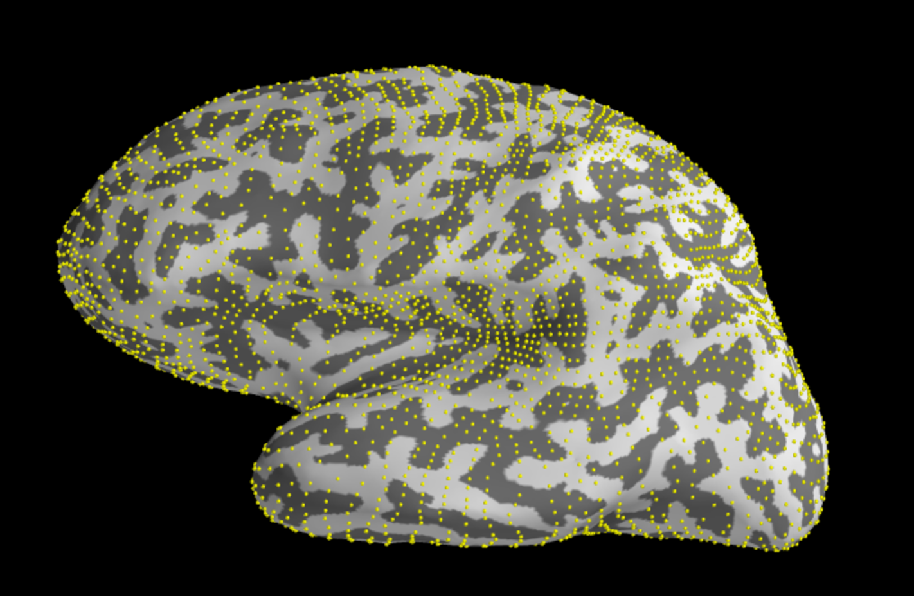

MNE EEG Manual¶
This guide is a collection of useful tips/observations, walkthroughs of how we do things, and in some cases when existing educational materials are not sufficient, a tutorial/background on different techniques (otherwise we point you to useful references).
A few notes on using this guide:
- This guide is necessarily incomplete and there are very likely more optimal ways of doing certain things that aren't touched upon here. Use it as a reference and guiding tool, but do not treat it as the end all be all and recognize that there may likely be mistakes/misinformation so be sure to sanity check things for yourself.
- This guide is intimately linked to the MNE-Python suite as this is what we use to analyze the data.
- This guide should always be evolving. Add to it and correct errors and out of date information. Do not let it become static.
- This guide is a mix of theory and practical walkthroughs. Thus, it is optimally used if one takes advantage of both aspects, but alternatively it can be used in a primarily practical manner.
- At the end of each topic is a section label "References and Resources" where a collection of papers/tutorials/book chapters that we've found helpful or important is listed.
Preprocessing¶
Preprocessing M/EEG data is composed of the following steps:
- Bad Channel Rejection & Raw Visualization
- Maxwell Filtering & Motion Correction [MEG Only]
- Artifact Correction with ICA
- Rereferencing [EEG Only]
- Filtering
- Epoching & Epoch Rejections
- ERP Sanity Checks
Note that the order of the steps above is the order in which you would want to perform these steps. In the following sections, we'll talk about each of these steps in detail.
Viewing Raw, Taking Notes, & Marking Bad Channels¶
The first step in our preprocessing pipeline is to take a look through the raw data. During this process, you will get a "feel" for the data by taking notes on its overall quality and marking sections that are contaminated by artifacts. Importantly, you will also be rejecting bad channels and potentially throwing out subjects whose data is too corrupted. Remember, that the lab notebook notes during data collection are a good reference to use during this process as well.
mne_browse_raw¶
mne_browse_raw is a GUI program packaged with the MNE C API that we use to visualize the raw data. It can be opened by first sourcing mne and then typing mne_browse_raw at the command line. Below we highlight some of the main functionality we use to visualize the raw, but comprehensive documentation can be found on the MNE website.

File Menu
- Open: Select to open a new raw data file. Note that MNE accepts fif files. Though this should not be a problem for data collected in the MEG Bay, data conversion may necessary for recordings done elsewhere.
- Change working directory: Self-explanatory, but useful when you need to change subject or task folders but do not want to re-customize your mne_browse_raw environment. If you're going to be loading in a lot of subjects from the same folder successively, it will save some time and annoyance to change to that directory.
- Load events (txt): Select to load an events file. Events files store the timestamps of when important trial events (e.g. stimulus onset, response onset) occur. This is crucial information for relating observed neural activity back to task demands.
- Apply Bad Channels:
Adjust Menu
Filter: Opens the Adjust Filter window. Filters are extremely important in processing and interpreting the data, and serve many functions including removing electrical artifacts and smoothing the observed signal. See the Filtering section for more description/resources on filtering and see the Suggestions for Stepping Through the Raw Section for advice on how to set and change the filter parameters while looking through the data. Note that filtering in the mne_browse_raw program is temporary (not persisted to the raw file) and is simply done for visualization purposes. In mne_browse_raw, the Adjust Filter window has three parameters:
- The Highpass (Hz) parameter determines what frequencies above a specified value are allowed to be in the data (i.e. letting the frequencies higher than a threshold pass). Unfortunately, mne_browse_raw can only handle integers so the lowest highpass you can apply is 1 Hz.
- The Lowpass (Hz) parameter determines what frequencies below a specified value are allowed to be in the data (i.e. letting the frequencies lower than a threshold pass).
- It should be noted, however, that the nearby frequencies below the lowpass and above the highpass are not completely removed. Rather, they are gradually phased out to prevent artifacts in the data. The Lowpass Transition (Hz) determines how steep this decline of power in frequencies above the lowpass threshold is.
Colors: Opens the Edit Colors window. Though this option may seem silly, it is strongly recommended as it really makes the viewing experience much easier. Adjust color parameters to your liking. Unfortunately, there is currently no way to save preferred defaults so you will have to change the colors every time you open the program. Below is a screenshot of my preferred color selections.

- Scales: Opens the Adjust Scales window (see below). Though there are many parameters to play with, only a handful will generally be useful:
- MEG (fT/cm): Sets the scale for the MEG planar gradiometers. Default value is 400. Set this value below 400 to magnify the time series of these channels. I typically set it to 200 or so.
- MEG axmult (cm): Sets the scale for the MEG magnetometers and axial gradiometers. Default value is 3. Set this value below 3 to magnify the time series of these channels.
- EEG (uV): Sets the scale for the EEG electrodes. Default value is 30. Set this value below 30 to magnify the time series of these channels.
- ECG (mV): Sets the scale for the ECG electrode. Default value is 1. I like to set the scale to .5 or lower to magnify the heartbeats and make it really clear to see when they peak.
- Time span: Change the width of the window of time shown in the mne_browse_raw window. Default value is 10s.
- Show stimulus markers: Check this to show event markers.

- Projections: Opens the Projection items window. Projections can be used to remove artifacts like eye blinks and heartbeat, but we now use ICA for this purpose. However, there are still several projections of importance:
- Average EEG Reference Projection: This projection simply subtracts the average activity of all electrodes from each electrode. See the section on Rereferencing for more details.
- Axial Projections: What are these?
With this window you can toggle projections on and off (apply and un-apply them) by checking the boxes. Note that mne_browse_raw automatically adds and turns on an average reference projection so remember to turn this off if you want to look at the original channels.
Windows Menu
Marking Bad Channels¶
One of the most important steps at this stage is to mark "bad" channels. These are channels that are determined to be unreliable or overly contaminated by noise and will not be used in any further analysis. Though there are some instances of noisy channels that are indisputably bad, often times it is unclear whether or not a channel should be marked as bad. There are not clear rules for how to decide in such situations, and ultimately it may come down to listening to your intuition or the intuitions of others.
Some Pieces of Advice on Bad Channel Removal:
- Remember to remove the average re-reference prior to identifying bad channels (mne_browse_raw turns one on by default, so always remember to remove it). The average re-reference can propagate noise from bad channels to other channels making it less clear which channel is the source of the noise.
- Check for repeat offenses: Do not reject a channel only because it shows a sudden spike of noise once or twice. Such artifacts tend to occur outside of trial (e.g. subject re-adjusts in seat), and will either wash out in averaging or be removed during epoch rejection. Only channels with systematic artifacts should be rejected.
- Compare it to its neighbors: A channel may seem noisy from visual inspection, but if its behaving similarly to its neighbors, it might be worth keeping around. Neighboring channels should be highly correlated, so if a channel does not look like its neighbors, it is most likely contaminated by noise and should be rejected.
- Try different filter levels: Some noisiness might be seen for higher filter levels (e.g. lowpass = 150 Hz) but will disappear almost entirely for more conservative filter settings (e.g. lowpass = 55 Hz). If this is the case, do not worry about rejecting the channel.
- If you are on the fence about rejecting a bad channel take into account its location. You should be more likely to reject if in an area not of interest and less likely if you want to analyze the region that channel is from.
- Line noise can be notch filtered and should not be the sole reason for rejection.
Some Examples of Bad Channels:
- Flat Channels : These channels are completely dead and will show as a flat line (see example below).

- Crazy Stuff : These channels don't have any particular phenotype other than they clearly do not reflect neural signal of any kind. See below for a few entertaining examples.


- Deviation from Neighbor: Some channels will have somewhat more subtle noise contamination and may even seem like reasonable signal on their own. However, they will stand out when compared to their neighbors. See below for a example.
 Example of More Subtle Bad Channel (EEG039). Note how it clearly stands out when compared to its neighbors however.
Example of More Subtle Bad Channel (EEG039). Note how it clearly stands out when compared to its neighbors however. - Poor Impedance: As discussed in the advice, channels with poor impedance are typically on the fence depending on whether the noise is restricted to high frequencies (if so, can often be filtered out) and on the location of the channel. Below is an example of a few channels shown at high and low frequency lowpass cutoffs. In this case, the poor impedance contamination clearly persisted to low frequencies and thus I decided to reject these channels despite them being in the midfrontal region (the primary region of interest for this analysis). There is no clear correct answer as to whether they should be rejected however, and another researcher may have made a different call.

 Example of Poor Impedance Bad Channels (19 - 21) with and without a low lowpass cutoff (top and bottom respectively). Note how the noise contamination persists even to the low frequencies.
Example of Poor Impedance Bad Channels (19 - 21) with and without a low lowpass cutoff (top and bottom respectively). Note how the noise contamination persists even to the low frequencies.
Bad channels come in a bunch of different shapes or sizes. The list above is not comprehensive and meant to merely give you an initial sense of the variation you can see in bad channel types. See the pieces of advice above for more tips on how to decide on channels you're on the fence about marking bad.
Marking Channels Bad in MNE: You can click on a channel's name to mark it bad (its color will change when it is marked - grey in the examples above). Simply marking a channel does not store this marking in the raw data file permanently. You must click the option Apply Bad Channels in the file tab to persist the bad channel markings to the raw file.
Taking Notes on the Raw Data¶
Organization of Notes
I have the following columns in my spreadsheet for taking notes:
- Subject Tag: So we know which subject we're talking about.
- Ratings @ 30, 50, and 100 Hz Low Pass: A subjective rating of quality of data at 30, 50, and 100 Hz low pass cutoff frequencies. Scale from 1-3 where 3 is high quality and 1 is poor quality. This serves as a quick overall summary of the quality of the data at the three main low passes I step through the data with (see next section). Ratings are obviously highly subjective so you should adjust scale to be meaningful to you. Generally, a 1 means this data is highly questionable and maybe should even be thrown out (especially if a 1 at 30 Hz). These ratings mainly will serve as a quick reminder of the quality of the data if you return to the data down the line during analysis.
- Artifact Notes: I put all notes about artifactual contaminants that cannot be corrected with SSP here (see Types of Artifacts section below for examples). I will cross-reference the notes taken in the lab notebook during collection to see if there is any information about particular artifacts being generated and what caused them. I will add those notes here if they exist.
- Bad Channels: The number of bad channels. This mainly serves as a reminder to apply the bad channels, but also gives a rough sense of how many channels you have available for that subject and is another indicator of the quality of the data.
- Projection Notes: These are notes I take about the presence of heartbeat and saccade artifacts (eye blinks are almost always present so I rarely make note of them). I will note here whether either are noticeably present and whether they frequently fall in trial periods and thus should be projected out.
- Projection Columns: If I determine a projection is not needed I put N/A. If it is needed, I put needed and then completed when the projection has been applied. These just help me keep track of the needed projections.
- I use the following color coding for subjects upon completion of projections:
- Green: Bad channels marked, projection computed and verified, and data is moderate to high quality.
- Yellow: Bad channels marked, projections computed and verified, but data is very poor, questionable quality. Essentially proceed with caution.
- Red: Data was of extremely poor quality and has been thrown out from analysis. If I determine a subject's data is of this poor quality, I will immediately mark there row red and move their raw data out to a separate rejected subjects folder so that it does not have any further processing done to it.

Types of Artifacts
Eye Blinks: Will appear as U shaped hills. They will match the EOG vertical channel and should be most prominent in frontal channels and diminish as you move to occipitals. These can be projected out.
 Example of eye blinks in frontal channels. Note how the artifacts match the shape of the vertical EOG channel and how they decrease in amplitude as you go more posterior (downwards).
Example of eye blinks in frontal channels. Note how the artifacts match the shape of the vertical EOG channel and how they decrease in amplitude as you go more posterior (downwards).Saccades: Often appear as square waves or plateaus. They will match the EOG horizontal channel and will be most dominant in frontal channels on the sides of the head. These can be projected out.
 Example of saccades in frontal channels (to the right of green line marker). Note how the artifacts match the shape of the horizontal EOG channel and how they increase in amplitude in channels on the side of the head.
Example of saccades in frontal channels (to the right of green line marker). Note how the artifacts match the shape of the horizontal EOG channel and how they increase in amplitude in channels on the side of the head.- Heartbeat: Will appear as regular spikes that will temporally align with the spikes in the ECG channel. They tend to be more pronounced in the temporal/occipital channels, but can permeate through most all channels. These can be projected out.
 Example of heartbeats in temporal/parietal channels. Note how the timing of the spikes match the timing of the ECG spikes (green lines show timing of heartbeat spikes).
Example of heartbeats in temporal/parietal channels. Note how the timing of the spikes match the timing of the ECG spikes (green lines show timing of heartbeat spikes). - Poor Impedance: This is fairly common and we affectionately refer to these artifacts as fuzzy caterpillars. These will be worst at higher frequencies, but may or may not contaminate lower frequencies (in which case they may be candidate for bad channel, see bad channel section). They will also typically contaminate the entire recording or a significant subset. If lower frequencies are not contaminated, a low pass filter will often help attenuate this artifact.
 Example of poor impedance in frontal channels (19-21).
Example of poor impedance in frontal channels (19-21). - Muscle/Movement Artifact: This can take several forms and results from various types of movement or muscle activity including head motion, sniffling, jaw clenching, etc. Often it will show up as walls of noise (particularly high frequency, but can also affect lower frequencies) or as "barbed wire" spikes. Two characteristic traits are that it will involve high frequency noise (though severe movement artifacts can all cause low frequency activity shifts) and will be localized in time (not persist throughout the whole recording). Muscle artifact cannot be corrected and thus contaminated sections must be thrown out during epoch rejections and/or attenuated with a low pass filter. Two examples of different forms of muscle activity are pictured below, but beware that it can take many different forms!


- Alpha Waves : Alpha waves are large amplitude alpha oscillations (8-12 Hz). Unlike the other artifacts, these are actual neural signals. However, depending on your analysis, these are often not neural signals of interest and thus are often considered as "artifacts" since they tend to dominate the data. There source is unclear, though it is thought they become more dominant in subjects who are tired, so this may be an index of how attentive/awake your subjects are. There is no real way to remove them (and it is really controversial as to whether one should), but the best option for handling alpha waves is pre-emptive: Make sure your tasks are engaging and subjects are staying alert! Example below.
 Example of alpha waves in occipital channels.
Example of alpha waves in occipital channels. - Line Noise : Electrical lines in the US oscillate at 60 Hz and sometimes this 60 Hz "line noise" can contaminate specific electrodes. Luckily, this activity is generally restricted to 60 Hz and can be removed with a notch filter or a low pass if not interested in high gamma activity (see section on filtering). Line noise can be determined by moving the low pass filter in mne_browse_raw from 58 to 62 Hz. If the noise in the channel all of the sudden appears, then this is line noise (otherwise it should more gradually increase with frequency).
 Example of line noise in EEG040.
Example of line noise in EEG040. - Slow Drift/Sweat Artifact: Slow drifts in voltage can result from changes in overall conductance over time. This will often happen as the subject begins to sweat in the cap. See below for an example (that may or may not be due to sweat). These drifts can be attenuated with a high pass filter (see the section on filtering).
 Example of slow drift in frontals. Note the very subtle slow wave activity.
Example of slow drift in frontals. Note the very subtle slow wave activity. - Electrode Pops: Occasionally electrodes will experience "pops", an example of which is pictured below. This happens because the interface between the electrode and the scalp functions as a capacitor and stores charge. Occasionally, these electrodes will have spontaneous discharges causing an instantaneous change in impedance which causes the vertical discontinuity in voltage. Electrode pops can be symptomatic of electrodes with poor connections and thus channels exhibiting pops should be carefully evaluated. Also, due to the sharp discontinuity introduced, electrode pops can be potential danger areas for filtering artifacts at later stages. Trials contaminated by pops are typically thrown out during epoch rejections (see the section on epoching).

- Cable Swing: If the bundle of cables connecting the EEG electrodes to the amplifier swings, it can sometimes create a massive artifact across all channels where activity seemingly goes flat. This will often follow severe movement on the subject's part. Trials contaminated by cable swings are typically thrown out during epoch rejections (see the section on epoching).

As with bad channels, there are many more artifacts that can contaminate your data than listed above and many more forms of the artifacts listed above than in the given examples. Just do your best to make note of contaminated periods both after the fact and during the collection processs so you are aware of potential problems.
Suggestions for Stepping Through the Raw¶
Here is a loose guide of the process I use for looking through the raw data with mne_browse_raw:
- Load in the desired channel selections.
- Open the raw file of interest.
- Set the time span to 10 seconds. Set the EEG scale to 30 microvolts. Set ECG to .5 millivolts to see the heartbeat spikes better.
- Turn off the average EEG projection. mne_browse_raw automatically adds one and turns it on when data is loaded in.
- Mark any flat channels as bad.
- Low pass at 30 Hz. Click through the data slowly. Mark any channels that are clearly doing wonky things as bad. Note any artifacts. Record my rating @ 30 Hz.
- Set low pass to 50 Hz. Click through the data again and make note of any newly visible artifacts. Record my rating @ 50 Hz.
- Set low pass to 58 and then 62 Hz. Skim through to see if any channels have clear line noise and make note of it.
- Set low pass to 100 Hz. Click through and make note of new artifacts. At this high pass, poor impedance and motion become much more apparent. If there are particularly fuzzy channels, I will often return to 30 Hz high pass to see if they have noise at such low frequencies. If so, I may mark these channels as bad if I was previously on the fence about them (will also depend on their location). Record my rating @ 100 Hz.
- Look through occipitals/temporals for evidence of clear heartbeat artifact and make note of it.
- Look through and see if there is significant evidence of saccade contamination of trials to warrant a projection.
- APPLY THE BAD CHANNELS!
Denoting Artifacts¶
Use annotations to denote onsets and offsets. Load in events. Add in markers between onsets and offsets to create square waves. Add to STI005. Make epochs plot include STI005 to visualize artifact inclusion.
Maxwell Filtering & Motion Correction [MEG Only]
Maxwell Filtering and motion correction are two separate preprocessing techniques for MEG. The former deals with removing noise contamination from external sources in the MEG and the latter deals with accounting for the subject motion during the recording. These techniques are covered in the same section because MNE has lumped them both into a single maxwell filter function (to make it more confusing, there are two separate maxwell filter techniques within this single function as well). However, the reason for this design choice is to maintain consistency with the Neuromag MaxFilter software (software written by the company that designed the MEG system) so they are the real ones to blame. Note that maxwell filtering should be done prior to any further processing on the MEG, however it is important that bad channels are marked prior to maxwell filtering as they will adversely influence the algorithm (the bad channels will get passed in). We'll first talk about the theory behind each of these techniques and then we'll talk about how to use them in MNE.
Maxwell Filtering Theory¶
Motion Correction Theory¶
Implementation with MNE and Neuromag software¶
Extracting the HPI Channels
Motion correction is dependent on location information recorded by the HPI's. Unfortunately, the HPI readings are buried in the FIF file and are not automatically read in by MNE. To make matters worse, MNE doesn't have functionally to extract the HPI readings. The only alternative is to use Elekta Neuromag's proprietary MaxFilter software. The Neuromag software has the capability to perform motion correction and maxwell filtering in addition to extracting the HPI's. However, MNE has replicated the maxwell filter and motion correction functionality, so we only use the software to extract the HPI's since the MNE function is more convenient for processing.
Unfortunately, the Neuromag software is only installed on a couple of computers at the center. The one that we use to run the software is parsley. parsley can be accessed via the following command:
ssh username@parsley
where username is your martinos center username. It will then prompt you for your Martinos center password. I recommend you add the following two lines to your .cshrc file to make the following steps more convenient:
setenv neuromag ...
setenv maxfilter ...
The first will let you source the Neuromag software by simply typing 'neuromag' at the command line. The second will let you run the software without having to specify the full location of the python script described above. Thus, with these two lines in your .cshrc file, you can run the extract HPI channels script on parsley as follows:
neuromag
python $maxfilter -i 'path to raw file' -o 'path to output file'
The first line sources the Neuromag software. The second line runs the python script with the raw file you want to extract the HPI's from as input and the path to an output file (I typically overwrite to the same raw file, rather than create a new one).
What exactly does this script result in? It does two things:
- It outputs a modified raw file with the HPI channels listed as actual data channels.
- It creates an HPI motion text file.
Visualizing Subject's Motion
Maxwell Filtering in MNE
Artifact Correction with Independent Components Analysis (ICA)
Theory Behind ICA¶
ICA has a very simple model:
$$ x = As $$where:
- x = observed data
- A = linear mixing matrix
- s = latent sources or components
In other words, it hypothesizes that your observed data is a linear combination of unobserved ("latent") sources. To make this a bit concrete, we'll consider a slightly modified version of one of the original motivating problems behind ICA: the cocktail party problem. In this version of the cocktail party problem, a bunch of guests are having multiple separate conversations in a room. However, we missed the party and instead placed microphones evenly spaced throughout the room to record what was being said so we could later catch up on the gossip (yes, a little creepy but it makes the analogy hold). The problem is that every microphone doesn't record an individual conversation, but instead records a summation of all of the different conversations. Thus, we need some way to recover the individual conversations. This is exactly the problem that ICA sets out to solve. We have some observed data (the recordings) that are a linear combination (the microphones pick up weighted sums of conversation based on their distance from the microphone) of unobserved sources (the actual conversations) and our goal is to determine these sources.
So what does all of this have to do with ICA? Let's translate our example into M/EEG terms. Our "conversations" are different sources of electrical activity (both artifactual and coming from the brain), our electrodes or SQUIDs are the microphones, and these sensors pick up weighted combinations of the different sources. In mathematical terms:
- x = # sensors x # time points matrix of recorded data
- A = # sensors x # sources matrix of mixing weights
- s = # sources x # time points matrix of electrical source activity
What is the advantage in recovering these sources? It turns out that ICA is really good at separating out certain artifacts such as eye blinks, sacades, and heartbeats into specific sources. Thus we can take the decomposition into A and s, find the the specific sources that are artifactual, zero out the corresponding weights for this source in A, and finally recombine the data back into x, but now with the artifactual pieces removed.
Assumptions Behind ICA
Estimating A and s from a single matrix x is a severely underdetermined problem. Consequently, we need to make a few assumptions in order for the technique to work:
- The sources must be independent. Just as with our cocktail party where everyone is having their own separate conversations independently of the other conversations (perhaps there may be eavesdropping, but not in our example), the electrical sources must be independent of one another (we'll get more explicit about what independent means later). Most importantly the artifactual components must be independent of the neural signal components. What justifies this? Though we can't entirely ensure this, we can be fairly confident they are independent due to the fact these artifacts shouldn't generally be temporally correlated with signals of interest and that their spatial distributions are typically distinct from neural signals of interest.
- The sources must be non-gaussian: We discuss why this must be the case below. However, as to why this assumption is justified, artifacts tend to have non-gaussian process distributions. This is apparent from the fact that PCA does not work well for separating out the artifacts where ICA does (if the sources were gaussian then PCA would be equivalent to ICA).
- The observed data must be a linear combination of the sources :
Non-Gaussianity & PCA vs. ICA
PCA finds sources that are linearly uncorrelated (orthogonal) to one another, while ICA finds components that are fully independent of one another. Note that independence implies uncorrelatedness, but not vice versa.
However, in the case of gaussian variables, uncorrelatedness does imply independence. Thus, for gaussian variables, PCA is sufficient and ICA will not be able to separate out the sources in any more meaningful way. In fact, ICA will not work with Gaussian variables. This is because for all orthogonal mixing matrices A, the multivariate distribution of As is identical if the sources are standard normal.
$$ pdf(Ax) = \frac{1}{2\pi} e^{(Ax)^2} = \frac{1}{2\pi} e^{x^TA^TAx} = \frac{1}{2\pi} e^{x^Tx} $$This follows from the fact that $A^{-1} = A^T$ for orthogonal matrices implying $A^TA = I$. Note that if the underlying sources are gaussian they will be transformed to standard normals by the whitening preprocessing step (see the preprocessing for ICA section).
Methods for estimating A and s: FastICA vs. Infomax
To estimate A and s, we make use of the assumption that the sources are independent and of the following transformation variable:
$$ z = Wx = WAs $$Clearly, z is thus a linear combination of s as x was. However, we now have the ability to modify W in search of the matrix $A^{-1}$ which would make $z = s$. We simply need a measure for z that will let us know we have found s. That is, we need to know when we have maximized the independence of z because this implies we have found s. There are two different algorithms for finding W and s:
FastICA: FastICA maximizes the nongaussianity of z. This follows from the CLT, that states that sums of indepdnent random variables approach a gaussian. By extension, any linear combination of indpendent variables will be more gaussian than the variables themselves. Thus, the z that minimizes this measure is when $z = s$ and $W = A^{-1}$ because all other W's lead to some sources being linearly combined and thus more gaussian.
Infomax: Infomax is based on a neural network formulation that is equivalent to minimizing the mutual information of z. Mutual information is an information theory measure of independence that indexs how much information one variable contains about another. When two variables are independent, their mutual information is 0 (knowing something about one variable gives you no information about the other).
Theoretically, maximizing nongaussianity and minimizing mutual information of z are equivalent. However, we have to find approximations for these measures which leads to differences in the practical realization of these algorithms. See the references section for papers giving details on these two methods.
We talk about MNE's implementations and comparing the methods in the practical section.
Preprocessing for ICA
To make the estimation process faster, the data is often centered (mean is subtracted) and whitened (the variances are standardized and the data x is decorrelated). This is usually done by first subtracting the mean and then using PCA to decorrelate the data.
Filtering with ICA
"It is important to high-pass filter your data before running ICA if there is any non-stationary "drift" etc. in the data. ICA assumes stationariity of the data, and in particular a constant channel mean (no drift). High-pass filtering should be done on the continuous data (before epoching)."
ICA in MNE¶
MNE has some automated workflows for detecting components related to artifacts (such as heartbeat and eye movements). However, we recommend and use a workflow where you manually visualize and select out artifactual components. In many cases, the automated workflow would work fine, but for those cases where it doesn't, the manual workflow is far superior and it is just generally a good sanity check. Also, we suggest only using ICA to remove saccade, eye blink, and heartbeat artifacts as these have stereotyped spatial and temporal representations. Other people may choose to remove more types of artifacts, but this gets dangerous as it becomes more difficult to ensure components are purely artifactual.
High Pass the Raw
The first step before applying ICA is to filter the raw data. As discussed in the theory section on filtering with ICA, it is helpful to apply a high pass of 1Hz for fitting ICA (though this is debated!). One can then subtract the components computed using the filtered data from the original unfiltered data (thus the filtering is temporary just for the fitting process). In MNE, this amounts to creating a copy of the raw data which will get filtered and leaving the original raw unfiltered as follows:
from mne.io import Raw
raw = Raw("example-raw.fif")
filtered_raw = raw.copy().filter(1, None)
Construct and Fit the ICA Model
MNE handles the ICA workflow via an ICA Class.
An ICA object can be initialized with the constructor. The most important arguments for the initialization are as follows:
- n_components:
- method:
- max_iter:
Once an ICA object has been constructed, it can be fit to the raw data. The fit method actually estimates the components and mixing matrix from the passed in data. Three important things to keep in mind when fitting the data:
- The ICA model should be fit to the filtered data.
- The ICA model should be fit separately for the gradiometers, magnetometers, and EEG channels. This can be accomplished by passing in particular picks to the fit function. After each fit, the model can be applied and will only update the relevant sensors.
- It is typically advisable to downsample the data with the decim parameter for performance purposes.
Visualize the Fitted Components & Select Artifactual Components
The fitted components can be visualized with the following code.
This will bring up an interactive viewer with all of the component time courses where you can scroll through channels as well as through time. The EOG and ECG channels will also get plotted for reference. There are three important pieces of functionality:
- Clicking on a channel name will bring up a topographic map of that component's loadings onto the sensors. This is important for verifying the expected spatial topography for the various artifacts.
- Clicking on a channel's time course will mark that channel for exclusion (it will turn red). When you close the plot, the channel's marked red will be stored and can later be excluded.
- Clicking between channel time courses will create a vertical time marker bar. This is useful for checking the temporal alignment between components and EOG & ECG channels.
Tips on Selecting Components
Though people often use ICA to remove other artifactual signals, we recommend you only remove eye blink, saccade, and heartbeat components as these have clearly defined time and spatial representations. Other sources of noise become much trickier to identify and can often lead to unintentional removal of signal. Here are some general intuitions about selecting components:
- Each artifact will generally be restricted to one component, but this is not necessarily the case. Generally, it is a good idea to start conservative and then return and remove further components if post-visualization reveals the artifact wasn't sufficiently removed.
- Gradiometers:
- Magnetometers:
- EEG: Eye blinks will almost always be present. Saccade may or may not depending on their frequency of saccade. Heartbeat may if their raw showed evidence of clear heartbeat contamination, but otherwise they will not. Each typically maps onto one components, but unusual eye blink or saccade patterns can sometimes lead to multiple components picking up the activity.
Remove the Selected Components
The final step is to remove the excluded comoponents from the original raw file (not the filtered version). Once this has been done for each type of channel, the data should be saved and visualized to sanity check the output.
Why We Use ICA Over SSP¶
The lab originally used SSP because two postdocs at the center advised we use SSP over ICA. However, since that time we have received 4 recommendations to use ICA over SSP. Two of these "recommendations" were based on past research collaborators of RA's who used ICA (note these weren't direct recommendations, but just observations that these two well versed EEG researchers used ICA and not SSP). The other two came in response to an email asking the MNE analysis mailing list which technique should be preferred. They made the following two points:
"In my current experience, the differences between SSP and ICA are negligible, when the methods are applied correctly. The paper Tuomas linked contains two nice example of how not to apply SSP correctly.
- The authors didn't chance the default of removing 2 SSP components, where they should probably have used 1 in certain cases (EEG usually only has 1 EOG component). So it's no surprise they found that the signal was reduced as well as the noise. Take home message: always check that the number of components you remove is appropriate.
- The authors never mention checking whether the extracted EOG epochs were correct. It is likely that they used the automated methods provided by MNE-Python blindly and just went with it. This could be acceptable in other studies (as long as the data is 'good enough' for the intended purpose), but certainly not in a study with the explicit focus on comparing noise reduction methods! Take home message: always check the EOG epochs found with the 'create_eog_epochs' function. Some things in the data (excessive movements by the subject, concatenating raw files that cause 'jumps' in the signal) can really mess up the automated algorithm.
In conclusion, I recommend the ICA pipeline in MNE-Python because that method is easier to apply correctly :) Notably because it doesn't rely on EOG event detection and because it has an automated manner of selecting the number of components to remove (plus the components are not orthogonal, so removing a second component is safer). But even with the ICA pipeline: double check the results! At the very least, check whether the noise components marked by the automated method make sense."
"They are not equally good because the methods are significantly different. SSP is less appropriate for ECG/EOG on statistical grounds. It learns spatial filters by extracting PCA components from the covariance computed over artifact samples. PCA assumes Gaussian distributions. But in our case these artifacts typically have skewed and/or peaky distributions, they are non-Gaussian and ICA happens to be designed for learning spatial filters from such signals. In my experience SSP can be good but often not good enough. It tends to remove too much or not enough and is more difficult to calibrate. This difference is less important for ERP/F analyses but they can matter for single trial and connectivity estimation. If you do decoding you don't have to bother either, your supervised model will learn the important patterns. However, SSP can do an excellent job however at global denoising when computed on empty room data. My 2 cents."
Note the first response was discrediting a paper that was linked in another response suggesting ICA was superior to SSP for SNR (not linked here because I agree with him that the paper was not thorough). The second response was in response to the first response.
Thus, given that:
- We had all of the previously discussed recommendations for ICA and the original SSP proponents at the center had since left and no SSP proponents spoke up on the mailing list.
- ICA is by far the more commonly used technique for EEG (and we haven't been able to find why the MEG community seems to use SSP relatively more).
- Alik is more familiar with ICA and thus more comfortable with it generally.
- There is a reasonable pipeline for ICA in MNE that seems to generaly work pretty well.
We decided to switch from SSP to ICA.
Re-Referencing to the Common Average
Once ICA components have been removed, the next step in our preprocessing pipeline is to re-reference our electrodes to the common average.
Theory Behind the Average Re-Reference¶
EEG recordings across electrodes are intimately linked to the reference electrode (See the section in Luck's ERP textbook for a good coverage of EEG referencing). Any noise particular to this reference will propagate to all other electrodes. One common employed method for dealing with such potential noise and other general global sources of noise is to re-reference each electrode to the average of all electrodes by subtracting the average activity of all the electrodes from each individual electrode. The rationale behind this decision is that activity common to all electrodes (which survives the averaging) is likely generated by some common noise artifact rather than any localized neural signature of interest and thus will be attenuated or removed upon subtraction.
Though often used, the average EEG reference is still controversial. It is only recommended for high density montages (~ >= 60 channels) because of reasons discussed in the following paper:
Dien, Joseph. "Issues in the application of the average reference: Reviews, Critiques, and Recommendations."
I defer more discussion of the average re-reference to this paper because it is a great overview. The takeaway is that it is potentially dangerous for lower density montages, but recommended for higher density montages such as those that we use.
Average Re-Reference in MNE¶
Re-referencing to the average can be accomplished using a projection since it is a simple linear transformation (this is how it is done in MNE). In this case the projection vector is simply:
$$ P = I - \frac{1}{n}[1, 1, ..., 1] $$where n is the number of channels (this excludes bad channels). In MNE, the average EEG reference projection is added to the raw upon being loaded in and also gets added/applied during multiple different functions. For some of these, there is a parameter that you can change to prevent this from happening, but for others there is nothing you can do (including for the projections functions and the apply_proj() function) This is a really annoying design flaw with MNE and they are working on fixing it. The reason that this happens is that MNE by default assumes that your data are not properly referenced and the default reference they choose to impose is an average re-reference. You can explicitly tell MNE that your data are properly referenced using the set_eeg_reference function (see the SSP in MNE section for an example of using this function). Hopefully you can update this section with a more reasonable approach in an updated version of MNE (such as making the default that the data are properly referenced and then actually explicitly re-referencing). I like to be explicit about adding the average reference (using raw.add_eeg_average_proj), so see below how I add and apply it along with other existing projections. Note that one could not be explicit and simply let it be added automatically when loading in the raw or calling apply_proj, but this hides an important operation done to the data, which is why I try to refrain from doing so.
from mne import read_proj
# Read in and add EOG & ECG projections
# I remove existing average re-reference here
proj = read_proj("./raw/projections/example-proj.fif")
raw.add_proj(proj, remove_existing=True)
# Explicitly add the average re-reference projection
raw.add_eeg_average_proj()
# Apply the projections (note that this will also add and apply
# an average rereference projection automatically because MNE made a
# poor design decision, I explicitly add above for transparency)
raw.apply_proj()
You may be wondering, "But wait! I thought we were supposed to do the artifact projections first and then average-rereference! You're adding and applying them all at the same time." This is actually not a problem, because applying all of the projections is a linear process so it does not matter what order they are done (MNE actually does them all at once). What matters is that we estimate the artifact projections before applying the average-reference. The artifact projections that we read in are still estimated on the originally referenced data.
Common Bug to Watch Out For
You may see the following type of warning occasionally:
Projection vector "Average EEG reference" has magnitude 0.11 (should be unity), applying projector with 62/70 of the original channels available may be dangerous, consider recomputing and adding projection vectors for channels that are eventually used. If this is intentional, consider using info.normalize_proj
This means that bad channels were updated after these particular projections had been computed. The solution to this warning is to drop the existing projections and then recompute them using the correct number of good channels. This can also be avoided if you do your best to select all bad channels before computing any projections.
Filtering
The raw data is often filtered to eliminate noise and clean up ERP plots. However, filters can potentially produce artifacts in the data (particularly high pass filters). As such, filtering should be done with caution and one should be careful that their filters are constructed optimally to reduce unintended artifacts. This section provides a little overview on practical concerns you should consider when looking to apply filters to your data. For a great overview of filtering EEG data, see Luck's chapter on filtering in "Introduction to the Event Related Potential".
Low Pass¶
Low pass filtering can reduce lots of high frequency artifacts (such as EMG activity) as well as generally clean up ERP plots. There is less concern about introducing artifacts than with high pass filters, but generally one should insure that the frequency response function cutoff is not too steep to prevent ringing artifacts. Low pass filters will generally spread out peaks over time causing earlier onsets and later offsets.
High Pass¶
High Pass filters are more contentious. High pass filters can be useful for cleaning up slow drift effects (maybe from sweat or irrelevant slow wave brain processes). However, high pass filters can attenuate and even reverse the polarity of ERP components. Furthermore, if the filter is not constructed properly, artifactual oscillations can be introduced. Steven Luck made an argument that a 0.1 Hz high pass is optimal and that higher high pass thresholds pose potential problems. Cohen, however, has used as high as 0.5 Hz. It is not clear what the correct approach is, although the conservative approach is to filter as little as possible.
Quality Control for your Filters¶
There are several things you can do to ensure proper use of filters:
- Leave proper buffers of activity to prevent edge artifact contamination of your data. Do this for both the raw, but also when you construct epochs (due to filtering in time frequency decomposition techniques).
- Visually inspect your filters to ensure that transition slopes are not too steep and to understand their temporal and frequency nature.
- Compare results with and without filters to see the effects that the filters specifically are having on your results. Make sure a signal of interest is not actually an artifact of a poorly constructed filter.
Practical Consideration for Applying Filters¶
Generally, you will want different low pass filters for your ERPs and your time frequency decompositions. Lower frequency cutoffs (such as 15-30 Hz) are often employed to clean up ERP plots since the ERP components of interest often occur as these frequency scales. However, one is often interested in higher frequencies for time frequency decompositions (maybe cutoffs of ~60 or so, or higher if specifically interested in gamma). Thus, two different sets of epochs with the same rejected trials, but different filters are needed. There are two options for how to do this:
- Filter the raw data twice. And then create two sets of epochs from each filtered version of the raw. Use the version filtered at the higher frequency to reject bad epochs and then propagate those same rejections to the epochs with the lower cutoff filter.
- Filter the raw data at the higher frequency cutoff and create a single set of epochs. Then simply re-low pass the epochs for the ERPS manually when computing the ERPs. Be sure to leave plenty of filter buffer room to prevent edge artifact contamination.
Generally, it is better to filter on the raw data than the epoched data (more edges in epoched data to potentially cause contamination). However, we have been doing option 2 due to convenience?
References¶
Luck's Introduction to the ERP has a great chapter on the basics of filters. It is a fairly quick and accessible read on the basics and overviews the concerns with high and low pass filters respectively.
The following paper is a paper by Luck where he gives a clear example of how higher high pass thresholds create artifactual ERP components and eliminate true components:
Tanner, Darren, Kara Morgan-Short, and Steven J. Luck. 2015. “How Inappropriate High-Pass Filters Can Produce Artifactual Effects and Incorrect Conclusions in ERP Studies of Language and Cognition.” Psychophysiology 52 (8): 997–1009.
Creating Epochs¶
Below is a list of relevant parameters (for the MNE epochs object) you will want to consider when creating your epochs:
- The list of events to epoch based on. These are generally determined from trigger channels.
- tmin and tmax determine the window to include around the event (event time being 0). Be sure to include a sufficient amount of time prior to event for a baseline period and also potentially for a filter buffer (beyond the baseline period). For post event, include however much time you think there will be trial related activity as well as additional filter buffer.
- baseline is a tuple defining the period to use for baseline normalization (dividing each epoch by the average of the baseline period). This gets all of the epochs on same relative scale and prevents distortion of baseline shifts across trials. The baseline period is generally chosen as the first couple 100 ms prior to the stimulus presentation/event. Generally, you want sufficient intertrial periods that are also randomly jittered in length so that their is no left over activity from the previous trial or predictive activity for this trial contaminating the baseline. IS THEIR A GOOD REFERENCE ON CHOOSING A BASELINE? Note that for events occuring at variable times during trials (such as responses) you will need to manually baseline normalize based on a stable baseline period (such as the pre-stimulus period).
- reject allows you to change the peak-to-peak amplitude automatic rejection thresholds for epochs for different types of channels. For EEG, a reasonable range to explore is 70 - 250 e-6 (WHY? REFERENCE FIND). Some people elect to do manual rejections instead. We typically just do automatic rejections, but it is worthwhile to peak at the epochs after automatic rejection and make sure no clearly suspect epochs remain. You generally want at most 5ish% of epochs to be rejected. If more are being rejected, you might want to have a less stringent rejection amplitude or possibly revisit earlier preprocessing stages to see if more electrodes should be marked as bad (remember noise can creep across electrodes with the average reference projection). A good guiding principle is to drive your rejection amplitude low so that most subjects are only losing around 5-10% of trials. If specific individual subjects begin losing a lot more, check the drop logs to see if this is due to a particularly poor channel or small subset of channels.
- detrend will let you remove a linear trend in your epochs. I think this could potentially serve as an alternative to a high pass filter, but I haven't seen evidence of it doing much to the epochs.
Other considerations for epochs:
- You may reject certain behavioral trials (outlier rejections, condition type, etc.). Make sure that the EEG events match these initial rejections.
- In the other direction, you should remove behavioral trials where the EEG epoch was rejected due to data quality.
- You may have to drop trials/epochs to equalize trial counts between conditions after rejections.
Iterative process of Rejecting Bad Channels Using Amplitude Rejection:
- Pick a threshold. Try to pick out electrodes that are causing higher number of rejections. Remove and check effect on average reference and see if they helped with number of rejected epochs. You can continue to titrate the rejection amplitude that balances strictness with completely decimating certain subjects.
Tradeoff: Rejecting bad channels you aren't interested in in sensor space will help clean signal across the board and lead to fewer epoch rejections. However, it will also give you poorer source localization so be less gung ho to reject electrodes who are on the fence if they are in a region of interest for source localizing (i.e. frontal vs. occipital for looking for DLPFC/ACC).
Event Related Potentials¶
Time Frequency Analysis¶
Morlet Wavelet Convolution¶
Reference: Cohen Ch.'s
As detailed in Cohen's chapter, Morlet Wavelet Convolution can be thought of as a time-varying Fourier transform. Rather than take a sinusoid as long as our data, we zero out all but the center of the sinusoid and then move this truncated sinusoid along our data. The result is like taking a bunch of mini time-localized overlapping Fourier transforms centered around each sample in our data.
Understanding The Tradeoff Between Frequency & Temporal Resolution
Before we detail how MNE implements wavelet convolution, let's develop some intuition for how important parameters affect the nature of our wavelets. There are three main parameters that affect our wavelets:
- The frequency of the wavelet: This specifies the frequency activity one is interested in investigating.
- The number of cycles in the wavelet: This specifies how many cycles of the chosen frequency will NOT be zeroed out with the gaussian taper.
- The sampling frequency of our data: This determines how many samples should be in our wavelet for a given cycle.
What is most important is understanding how these parameters interact to control your wavelet and also control the tradeoff between temporal and frequency resolution. Most importantly:
- More Cycles = Better frequency resolution, poorer temporal resolution. The more cycles we have the less spread out the frequency content of the wavelet is and consequently the better frequency resolution we have. Greater frequency resolution means we can more accurately resolve the activity estimated by that wavelet to the frequency of the underlying sinusoid. However, greater frequency resolution comes at the cost of poorer temporal resolution. Having more cycles means the length of the non-zero component of your wavelet must increase, implying that the estimate of frequency content is smeared across a larger amount of time.
- The tradeoff between frequency and temporal resolution is also dependent on the frequency of the wavelet. This is because the same number of cycles requires different lengths of time for different frequencies. For example, 5 cycles of a 5 Hz sinusoid takes 1 second, but 5 cycles of a 20 Hz sinusoid only takes .25 seconds! Thus, 5 cycles at a lower frequency will have a much lower
- The sampling frequency doesn't directly affect the time/frequency resolution tradeoff, but it is very important to ensure that the oscillations in your wavelet actually match the appropriate frequency. The length of the wavelet will thus be scaled based on the actual sampling rate (since a wavelet of length 1000 is 1 second for a 1000 Hz sampling rate, but 2 second for a 500 Hz sampling rate).
To let you gather more intuition for how these parameters interact to produce the wavelets, I've created the interactive example below that plots the normalized real component of the wavelet (remember the actual wavelet being used is complex, read Cohen!!!) across time and also plots the normalized power spectrum of the wavelet.
Some important things to keep in mind as you explore:
- The sampling frequency is set to 1000 Hz. This is nice and intuitive because each sample is thus directly interpretable as 1 millisecond.
- Be wary of the x-axis limits for the real component time plot. I tried to keep it relatively stable, but it does occasionally change to account for major shifts in temporal resolution.
- The temporal resolution is defined as the (number of cycles / frequency) * 1000. This is the amount of time in the wavelet that is non-zero. The lower this is, the better the resolution.
- The frequency resolution is summarized by the full width, half maximum (FWHM) measure. Since the spectra of each wavelet is approximately gaussian, the resolution is approximated by normalizing the spectra and then taking the width of the gaussian at the points that are closest to 0.5 on each side of the peak. Note that a higher FWHM implies greater resolution.
from mne.time_frequency import morlet
from ipywidgets import interact
import pylab as plt
import seaborn as sns
import numpy as np
from scipy import fft
sns.set(style="white", font_scale=2, rc={"lines.linewidth": 2.5})
COLORS = sns.color_palette("Set1", n_colors=10, desat=.8)
plt.subplots_adjust(hspace=0.5, wspace=0.5)
%matplotlib inline
def plot_wavelet(freq, n_cycles):
f, axs = plt.subplots(1, 2, figsize = (16, 6))
freqs = []
freqs.append(freq)
# Compute the morlet wavelet
wavelet = morlet(sfreq=1000, freqs=freqs, n_cycles=n_cycles, sigma=None)[0]
# Compute the temporal resolution
tr = (float(n_cycles)/freq) * 1000
# Plot the normalized real component of the wavelet
axs[0].plot(wavelet / np.max(abs(wavelet)))
axs[0].set_xlabel("Time Duration [ms]")
axs[0].set_title("Temporal Resolution: %.2f ms" %(tr), y=1.03)
xlim = (len(wavelet) / 1000 + 1) * 1000
axs[0].set_xlim((0, xlim))
# Compute the normalized spectrum
n = len(wavelet)
k = np.arange(n)
T = n/1000.0
frq = k/T
frq = frq[range(n/2)]
Y = np.abs(fft(wavelet)/n)
Y = Y[range(n/2)]
Y /= np.max(Y)
# Compute the full width half maximum
fs = frq[np.argsort(np.abs(Y - 0.5))]
fwhm = np.abs(fs[1] - fs[0])
freq_range = np.where(np.logical_and(frq >= 0, frq <= 70))
# Plot the spectrum of the wavelet
axs[1].plot(frq[freq_range], Y[freq_range])
axs[1].set_xlabel("Frequency [Hz]")
axs[1].set_title("Frequency Resolution (FWHM): %.2f Hz" %(fwhm), y=1.03)
axs[1].axvline(freq, color='k', linestyle='--')
f.suptitle("Frequency: %s Hz, Number of Cycles: %s" %(freq, n_cycles), y=1.05, fontsize=24)
sns.despine()
plt.show()
interact(plot_wavelet, freq=(1, 60, 1), n_cycles = (1, 60, 1))
Two important intuitions:
- If you keep the frequency constant, more cycles implies greater frequency resolution at the cost of temporal resolution.
- If you keep the number of cycles constant, higher frequencies gives you greater temporal resolution at the cost of frequency resolution.
Because of the above intuitions, it is common to vary the number of cycles as a function of the frequency. You may want to keep temporal or frequency resolution constant across frequencies, or you may want to highlight one or the other in particular frequency bands. Exactly how you make the decision on what frequencies to include and the corresponding cycles is dependent on your particular analysis goals. A common approach is to take logarithmically spaced frequencies paired with logarithmically spaced cycles (say from 3 - 10 cycles). This keeps your relative frequency and temporal resolutions more similar across frequencies than if you just kept the number of cycles constant.
Applying Wavelet Convolution in MNE
MNE conveniently constructs yours wavelets and convolves them with your data for you with the function: tfr_morlet
This function takes in an epochs or evoked object and returns an EpochsTFR or AverageTFR object which are MNE's container classes for time frequency power and phase. To see how to interact with these objects for plotting and normalization of phase or power see the visualizing power and visualizing phase sections.
The function has the following parameters:
- freqs: The list of frequencies you want to extract TFR representations for.
- n_cycles: The list of cycles to use for the wavelet at each frequency specified with the freqs parameter. See the prior section for a discussion of how to choose your frequencies and the corresponding cycles.
- use_fft: Whether to use the FFT for convolution. Should be faster than doing time domain convolution (see convolution theorem).
- return_itc: Whether to return intertrial coherence estimation as well. Can only be done if epochs are passed in.
- decim: Whether to downsample for performance/memory reasons.
- zero_mean: Whether to demean your wavelets. WHY IS THIS IMPORTANT?
- average: Whether to return the averaged power results or keep individual epoch power separate.
Filter Hilbert¶
Cross Frequency Coupling¶
Two Different Approaches:
1) Cohen Approach
Cohen used Morlet to get phase and power. Weight the different unit low freq phase vectors by the corresponding high freq power to get a weighted ITPC. The magnitude determines CFC. Can test for significance by doing permutation testing via shuffling the amplitude vector.
2) Kramer Approach
Bandpass into high and low frequencies. Use Hilbert transform to extract phase and power.
2.1: Binning by Phase
Bin time points by phase and then calculate average power of each bin. The maximum - minimum is statistic which can be tested using permutation of power.
2.2: GLM
Assume amplitudes follow gamma distribution. Log link function.
Normalizing & Visualizing Power¶
Source Localization in MNE¶
Set Up the Linux Environment¶
There are three things that need to be done before running through the source localization pipeline:
- Set an environment variable called \$SUBJECTS_DIR to the path where your Freesurfer Recons will live.
setenv SUBJECTS_DIR 'path to recons folder' - Source Freesurfer
- Source MNE
- Set an environment variable $SUBJECT with the name of the current subject you are processing:
setenv SUBJECT 'subject code'
Freesurfer Reconstruction¶
The first step in forward model process is to generate a Freesurfer reconstruction. This process results in a 3D reconstruction of the subject’s brain, with many useful items (e.g. brainmask, cortical labels) generated during intermediate steps. The 3D brain will ultimately be used at many steps along the DARPA analysis pipeline, including MEG/EEG analysis, ECOG/LFP analysis, and visualization. As such, it is a crucial step and deserves special attention. In the context of source localization, it is used to generate the BEM mesh files and to align the EEG and MRI coordinate systems.
Creating the Reconstruction
Unfortunately the Freesurfer reconstruction process is quite complicated and lengthy, involving many steps and hours of computation time (15-20 hours is usual). Fortunately the reconstruction process is accurate with laudable regularity insofar that a structural scan from a 3T Martinos MRI Scanner is used. For further steps on the reconstruction process, see: https://surfer.nmr.mgh.harvard.edu/fswiki/ReconAllDevTable
If not done already, load Freesurfer and set the subjects’ environment (see Setting up the UNIX Environment).
Import your data and create a subject directory (this is run only once). This step involves two free parameters: (a) the structural scan; (b) the subject id. You will specify the path to the structural scan located in the subject’s fMRI folder, usually:
/autofs/space/sophia_002/users/DARPA-fMRI/XXXXX_Data/YYYYY/MEMPRAGE/004/YYYYY_MEMPRAGE_4e_1mm_iso_2.nii
where XXXXX is the subject’s group (e.g. pilot, healthy, surgical) and YYYYY is the subject id. Select the structural scan (ending in .nii) from the 4th run (004). Then run:
recon-all -i PATH_TO_STRUCTURAL -subjid SUBJECT_ID
Begin the reconstruction process.
recon-all -all -subjid SUBJECT_ID
Checking the Reconstruction
This section details the steps for checking the Freesurfer reconstruction. Though slightly tedious, this assures that the reconstruction process was successful and ensures quality data. In most cases, the reconstruction process should be fine. There are certain errors (detailed below) to watch out for. For more information, see the Freesurfer troubleshooting tutorial: https://surfer.nmr.mgh.harvard.edu/fswiki/FsTutorial/TroubleshootingData
Check the Skull Strip
As the name suggests, the skull strip step in reconstruction separates the brain from non-brain, creating the brainmask in the process. In other words, this step creates an image containing only the brain matter from the T1 image.
Errors in this step come in two varieties:
- Aggressive skull-stripping: Aggressive skull-stripping occurs when Freesurfer removes actual brain from the image. This will usually manifest as missing parts of cerebellum, though missing parts of occipital and parietal cortex are not uncommon.
- Conservative skull-stripping: Conservative skull-stripping occurs when Freesurfer removes too little non-brain material. This will usually manifest as dura mater floating above the cortex. For troubleshooting, see the next section.
Open the subject’s T1 and brainmask in Freeview:
setenv SUBJECT SUBJECT_ID
freeview -v $SUBJECTS_DIR/$SUBJECT/mri/T1.mgz $SUBJECTS_DIR/$SUBJECT/mri/brainmask.mgz
Use the mouse to click/scroll through the layers of the brainmask. Be sure to look out for missing chunks of brain matter (see below) or remaining chunks of dura mater/skull (see below). (Left) An example of a clean brainmask. (Middle) An example of an aggressive brainmask. Note the missing cerebellum. (Right) An example of a conservative brainmask. Note the leftover dura mater.
Check the White and Pial Surfaces
As part of the reconstruction process, Freesurfer segments the white and pial matter surfaces. Freesurfer attempts this segmentation by examining the difference in brightness between these two surfaces.
Errors can also occur during this process. Sometimes white matter voxels are excluded, and other times grey matter voxels are included in the white matter in error. The pial surface is created by expanding the white matter surface so that it closely follows the gray-CSF intensity gradient. This expansion, however, can result in error if there are issues with the brainmask or white matter. For troubleshooting, see the next section.
Open the subject’s T1 and brainmask in Freeview, including the pial and white matter surfaces.
freeview -v $SUBJECTS_DIR/$SUBJECT/mri/T1.mgz \
$SUBJECTS_DIR/$SUBJECT/mri/brainmask.mgz \
-f $SUBJECTS_DIR/$SUBJECT/surf/lh.white:edgecolor=yellow \
$SUBJECTS_DIR/$SUBJECT/surf/lh.pial:edgecolor=red \
$SUBJECTS_DIR/$SUBJECT/surf/rh.white:edgecolor=yellow \
$SUBJECTS_DIR/$SUBJECT/surf/rh.pial:edgecolor=red
Use the mouse to click/scroll through the brain. Be sure to make use of all three viewing angles. There are three patterns to be wary of:
- False lesions: these occur when small regions of white matter (yellow) failed to be identified as such, resulting in small circular holes in the 3D brain. These seem to be uncommon but are still noteworthy.
IMAGE
- Spiky cortex: these occur when leftover dura mater on the periphery of cortex are inappropriately categorized as white matter, resulting in small “cortical spikes” extending from the 3D brain. These are fairly common with inadequate skull-stripping.
IMAGE
- Overextended pial surface: these occur when the reconstruction process extends the pial surface too far into the skull into leftover dura mater. These can be common with inadequate skull-stripping.
IMAGE
Use tksurfer to look for reconstruction errors in the 3D brain in both the left and right hemispheres.
tksurfer $SUBJECT rh inflated
tksurfer $SUBJECT lh inflated
(Top Left) An example of a “false lesion”. Note the conspicuous hole in the white matter. (Top Left) An example of “spiky cortex”. Note the patch of white matter where none should be. (Bottom right) An example of a 3D brain with both a “false lesion” [yellow arrow] and “spiky cortex” [red circle]. (Bottom left) An example of overextended pial matter.
All images from: https://surfer.nmr.mgh.harvard.edu/fswiki/FsTutorial/TroubleshootingData
Troubleshooting Freesurfer Reconstructions
THIS SECTION IN DEVELOPMENT
Fixing a Bad Skull Strip
Fixing a Bad White/Pial Matter Segmentation
Generate the Forward Model¶
Our source localization procedure uses subject specific anatomical information (via MRI scans) to construct subject specific forward models. Thus, a lot of processing must be done to go from a subject's MRI scan to the anatomically informed forward model for source localization. There are four main steps:
- The source space needs to be created.
- The Boundary Element Model needs to be created.
- The MRI & EEG coordinate frames need to be aligned.
- The above three need to be combined into a single forward model operator.
Generate the Source Space Mesh¶
The source space we use is a distributed triangular mesh over the subject's white matter surface created by the Freesurfer reconstruction where each vertex of a triangle corresponds to a potential current dipole EEG source. A visualization of an example source space mesh is shown below.

The mne_setup_source_space below creates this mesh:
mne_setup_source_space --ico -6 --cps --overwrite
- Description: Creates the subject specific source space mesh on the subject's reconstructed white matter surface.
- ico 6: Uses the 'oct6' source spacing resulting in 4098 sources per hemisphere. See here for a description of the MNE source spacings.
- cps: This includes information about nearest neighbors for each source point in the output file so that cortical patch statistics can be later calculated if desired (read more here).
- overwrite: Overwrites any existing source space file
- Output:
- \$SUBJECT-oct-6p-src.fif: Source space file with patch statistics.
- Various other source files in the bem folder with auxiliary information.
Generate the Boundary Element Model¶
Segment the Brain, Skull, & Scalp
The first step in the process is to generate the necessary surfaces for the BEM model. This involves segmenting the brain, the skull, and the scalp and then producing freesurfer surfaces for the inside of the skull, the outside of the skull, and the scalp. For more information on MNE's BEM surface segmentations see here.
There are two different methods for doing this:
1) Use a FLASH Scan
The FLASH scan uses a contrast that allows for better identification and separation of the brain, skull, and scalp surfaces. This is the preferred method and should be used if a FLASH scan is available.
Make and change directory into a new folder for the FLASH scan.
cd $SUBJECTS_DIR/$SUBJECT mkdir flash05 cd flash05Use mne_organize_dicom to setup the directory as needed for the next step. This will copy over and organize the raw FLASH dicoms so that the segmentation can be carried out.
mne_organize_dicom 'path to the folder where the raw FLASH scan is stored'Make a symbolic link to the newly created FLASH folder so that MNE can find it. The flash directory created will likely be of a similar format to the following: '011_MEFLASH_8e_05deg'
ln -s 'Name of created FLASH directory' flash05Make surfaces for the 3-layer BEM model. The following command creates an outer scalp layer (outer_skin.surf), an outer skull layer (outer_skull.surf), and an inner skull layer (inner_skull.surf) in the flash folder in the bem folder (and also other files which are further detailed in the MNE page linked above). The noflash30 option means the 30 degree flip angle will not be used as we do not acquire a FLASH scan with this flip angle.
mne_flash_bem --noflash30QC the Segmentation. Once the segmented BEM surface files have been created, an important sanity check is to visualize these layers and ensure there are no blatant errors, such as overlap between separate layers. This can be done using freeview by overlaying the three created surface files over the subject's T1 volume.
freeview -v $SUBJECTS_DIR/$SUBJECT/mri/T1.mgz -f $SUBJECTS_DIR/$SUBJECT/bem/flash/inner_skull.surf -f $SUBJECTS_DIR/$SUBJECT/bem/flash/outer_skull.surf -f $SUBJECTS_DIR/$SUBJECT/bem/flash/outer_skin.surfMake a symbolic link to these surfaces in the bem folder itself so MNE can find them.
ln -s $SUBJECTS_DIR/$SUBJECT/bem/flash/inner_skull.surf $SUBJECTS_DIR/$SUBJECT/bem/inner_skull.surf ln -s $SUBJECTS_DIR/$SUBJECT/bem/flash/outer_skull.surf $SUBJECTS_DIR/$SUBJECT/bem/outer_skull.surf ln -s $SUBJECTS_DIR/$SUBJECT/bem/flash/outer_skin.surf $SUBJECTS_DIR/$SUBJECT/bem/outer_skin.surf
2) Use the Freesurfer Watershed Algorithm
If a FLASH scan is not available, one can use the Freesurfer watershed algorithm to do the segmentation directly on the subject's T1. This is not as accurate as using the FLASH, however, and the FLASH method should be used if a FLASH scan is available.
Run the following command to make the surfaces for the 3-layer BEM model. This segments the brain, skull, and scalp and then creates an outer scalp mesh (\$SUBJECT_outer_skin_surface), an outer skull mesh (\$SUBJECT_outer_skull_surface), and an inner skull mesh (\$SUBJECT_inner_skull_surface) in the watershed folder in the bem folder.
mne_watershed_bem --subject $SUBJECT --atlasQC the Segmentation. Once the segmented BEM layer files have been created, an important sanity check is to visualize these layers and ensure there are no blatant errors, such as overlap between separate layers. This can be done using freeview by overlaying the three created surface mesh files over the subject's T1 volume.
freeview -v $SUBJECTS_DIR/$SUBJECT/mri/T1.mgz -f $SUBJECTS_DIR/$SUBJECT/bem/watershed/{$SUBJECT}_inner_skull_surface -f $SUBJECTS_DIR/$SUBJECT/bem/watershed/{$SUBJECT}_outer_skull_surface -f $SUBJECTS_DIR/$SUBJECT/bem/watershed/{$SUBJECT}_outer_skin_surfaceMake a symbolic link to these surfaces in the bem folder itself so MNE can find them.
ln -s $SUBJECTS_DIR/$SUBJECT/bem/watershed/{$SUBJECT}_inner_skull_surface $SUBJECTS_DIR/$SUBJECT/bem/inner_skull.surf ln -s $SUBJECTS_DIR/$SUBJECT/bem/watershed/{$SUBJECT}_outer_skull_surface $SUBJECTS_DIR/$SUBJECT/bem/outer_skull.surf ln -s $SUBJECTS_DIR/$SUBJECT/bem/watershed/{$SUBJECT}_outer_skin_surface $SUBJECTS_DIR/$SUBJECT/bem/outer_skin.surf
Create the BEM & Solve It
The second step in the process is then to create the BEM model and its solution via the mne_setup_forward_model command described below.
- Description: Creates triangular source meshes over the three BEM layers, assigns conductivity values to each layer, combines them into a single model, and then solves the model so that you get the outputs on the scalp in terms of the inputs on the inner skull layer.
- ico 4: Specifies that the 'ico4' source spacing triangulation will be used. This results in 5120 sources across both hemispheres for each BEM surface (hence the 5120 in output files). This is the recommended spacing by MNE.
- innershift: Specifies the number of millimeters to shift the inner skull layer outwards. Differs depending on whether using FLASH vs. Watershed. WHY DO WE CHOOSE THIS?
- surf: Use the freesurfer surfaces.
- Output:
- The BEM meshes with the ico4 source spacing: \$SUBJECT-inner_skull-5120.fif, \$SUBJECT-outer_skull-5120.fif, \$SUBJECT-outer_skin-5120.fif
- The full BEM model: \$SUBJECT-5120-5120-5120-bem.fif
- The solution to the BEM model: \$SUBJECT-5120-5120-5120-bem-sol.fif
With FLASH:
mne_setup_forward_model --subject $SUBJECT --surf --ico 4 --innershift 2
With Watershed:
mne_setup_forward_model --subject $SUBJECT --surf --ico 4 --innershift -1
Align the EEG & MRI Coordinate Frames¶
This section details the co-registration of the EEG sensors to the MRI coordinate system. This alignment is necessary to map the EEG sensor voltage activity to the nearest vertices on the scalp mesh. Accuracy in co-registration is crucial for a quality forward model. As such, it is important to evaluate the results of the co-registration algorithm with care. Beware that this is a somewhat time intensive and difficult process (the difficulty and challenges tend to vary quite a bit between subjects). The output of this process is a file containing the coordinate transform matrix (from EEG to head model).
Note: This process will need to be repeated for each separate day of scanning (every separate time a digitization is collected).
Create the 3D Head Model
In order to visualize and align the EEG electrodes with the MRI head space, we need to create a 3D model of the subject's head from their MRI. We do this using the following Freesurfer command:
mkheadsurf -subjid $SUBJECT
This will create an 'lh.seghead' surface in the subject's Recons folder which holds a head surface model for the subject. Next, we convert this Freesurfer surface into a fif file with the following commands:
cd $SUBJECTS_DIR/$SUBJECT/bem
mne_surf2bem --surf $SUBJECTS_DIR/$SUBJECT/surf/lh.seghead --id 4 --check --fif $SUBJECT-head.fif
Setup the MRI Folder for Coordinate Frame Alignment Files
Set up the subject’s Freesurfer MRI folder for MNE coordinate alignment. The command creates the directory T1-neuromag/sets where the coordinate transform files will be stored (see here for more info).
mne_setup_mri
Interactively Align the EEG & MRI Coordinate Frames
Next we need to actually align the EEG electrode and MRI coordinates. We do this semi-automatically using MNE's mne_analyze program. The steps are listed below:
Open mne_analyze by typing mne_analyze at the command line.
Load the subject’s pial surface: File → Load Surface → Select Pial Surface.
Load the subject’s digitization data: File → Load digitizer data → Select the raw fif file for the data you are planning to take the source space that has the digitization data embedded.
Open the coordinate alignment window: Adjust → Coordinate alignment.
Open the viewer window: View → Show viewer
In the Coordinate alignment window, click RAP, LAP, and Nasion to set the right auricular, left auricular, and nasion points respectively. After clicking on one of these three buttons, click on the approximate point on the head model corresponding to each of these points. (See below for examples.)
After setting the fiducial points, click Align using fiducials.
Still in the Adjust coordinate alignment window, find the ICP align button. Set the number of steps to 10. Press ICP align. Make sure 'Try to keep nasion in place' is checked.
Show the digitization points so you can see the results. In the View window: Options → Show digitizer data. Digitizer points (in red) should now be visible.
Check the alignment. If satisfied, press Save mri set in the Adjust coordinate alignment window. This will save the MRI coordinate transform matrix to the MRI folder in the subject’s Freesurfer folder. Note the name of the newly saved file. If not satisfied (and often the fit will not be immediately satisfactory), it is best at this point to try to do final alignment manually. See the extra tips section below.
Rename the subject’s MRI coordinate transform matrix. Ideally, the new filename should incorporate the day of scanning for that subject. This will be important, because this file will be used to create the forward model for all tasks run on that day.
cd $SUBJECTS_DIR/$SUBJECT/mri/T1-neuromag/sets ln -s JUST_MADE_FILE cor_{SUBJECT_ID}_{DAY_OF_SCANNING}.fif
Extra Tips:
- If there are really bad points that just don't seem to fit, it helps to remove them by selecting omit and then entering a large number such that only these points are removed. Then try re-running the ICP align algorithm after re-aligning to the fiducials. Bad points can often otherwise really throw off this algorithm
Create the Forward Model Operator¶
We then create the full forward model operator with the MNE python function 'make_forward_model'. This function takes in source space fif file, the BEM solution fif file, and the coordinate transform fif file generated in the each of the three sections above respectively and then assembles these all into one operator. The resulting operator describes how a particular source configuration on the source space would translate into activity at the recorded electrodes. If you're familiar with the theory behind source localization, this is the gain matrix. The gain matrix is a matrix that transforms source voltages into voltages at the EEG electrodes. See the code below for an example of its usage.
from mne import read_trans, read_bem_solution, read_source_spaces
from mne import make_forward_solution
from mne.io import Raw
import os
# Set equal to the path to where the Recons folders are stored
fs_recons_dir = 'Path to Freesurfer Recons Folder'
# Set equal to the subject code (name of the subject's folder in the Recons folder)
sub_name = 'Name of subject'
# Load in the info from the subject's raw data
raw_info = Raw('Path to raw data', preload=False, verbose=False).info
# Load the BEM solution file
bem = read_bem_solution(os.path.join(fs_recons_dir, sub_name, 'bem', '%s-5120-5120-5120-bem-sol.fif' % sub_name))
# Load the source space file
source = read_source_spaces(os.path.join(fs_recons_dir, sub_name, 'bem', '%s-oct-6p-src.fif' % sub_name))
# Load the Coregistration Coordinate Transform File (replace with actual name of trans file)
coord_trans = read_trans(os.path.join(fs_recons_dir, sub_name, 'mri', 'T1-neuromag', 'sets', 'name of coord trans file'))
# Compute & Save the Forward Solution
# mindist = Minimum distance (mm) a source needs to be from the inner skull layer to be included
make_forward_solution(raw_info, coord_trans, source, bem, fname='desired output path',
meg=False, eeg=True, mindist=1.0, overwrite=True)
from mne import read_epochs, compute_covariance, write_cov
# Specify the baseline period in seconds
baseline = (baseline_start, baseline_end)
epochs = read_epochs('Path to epochs data')
noise_cov = compute_covariance(epochs, tmin=baseline[0], tmax=baseline[1], method="shrunk")
write_cov('Path to covariance matrix folder', noise_cov)
Make the Inverse Operator¶
We use the minimum norm inverse operator for computing the source estimates. Background for this approach is given here .
A few key points for this approach:
- The source estimates have a normal prior distribution: D ~ N(0, R/$\lambda$).
- R is the source covariance matrix.
- D are the source estimates.
- $\lambda$ is a regularization parameter that:
- Ensures a unique solution since we have a lot more unknowns (~10000 source dipoles) than observed data (<= 256 EEG channels).
- Regularizes the solutions by pushing source amplitude estimates towards zero.
- The likelihood distribution is a normal distribution: Y ~ N(GD, C)
- Y is the observed EEG data
- G is the gain matrix (forward model, generated in the Generate the Forward Model section).
- D are the source estimates.
- C is the estimated EEG Noise Covariance Matrix (generated in the Estimate the Noise Covariance Matrix).
- The minimum norm inverse operator is the MAP estimate of the resulting posterior (source prior x EEG data likelihood).
The inverse operator is computed using the python function make_inverse_operator shown below. Note that the regularization is not specified and applied until the operator is applied (see the next section) and we discuss how the value of lambda is chosen there. We use the default parameters meaning the following two caveats apply:
- The loose parameter is set to the default 0.2 meaning that the dipole amplitude components tangential to the surface are allowed to vary from 0 with 20% of the variance of the normal component. This means that three values (two tangential, and one normal amplitude component) are estimated for each source dipole.
- The depth parameter is set to the default 0.8 meaning ??
from mne.minimum_inverse import make_inverse_operator, write_inverse_operator
from mne import read_epochs, read_forward_solution, read_cov
epochs_info = read_epochs('path to epochs').info
fwd = read_forward_solution('path to saved forward solution')
cov = read_cov('path to saved noise covariance matrix')
inv = make_inverse_operator(epochs_info, fwd, cov)
write_inverse_operator('path to store inverse', inv)
Compute the Source Estimates¶
Source Localization Theory¶
Theory¶
In source localization, our goal is to move from sensor space (electrodes on the head) to source space (neuronal sources in the brain). Mathematically, we can construct the problem as follows:
$$ M = GD + n $$where:
- M is a # of channels x # of time points matrix detailing the sensor voltage readings at each time point. This is the actual data that we observe.
- G is a # of channels x # of dipoles matrix detailing the lead field for each sensor. The lead field for a sensor describes how activity at each source dipole contributes to produce the voltage at that sensor. Each row of G can thus be thought of as each separate sensor's lead field. The lead field matrix G is determined by the forward model being used as well as the locations of the sensors and dipoles.
- D is a # of dipoles x # of time points matrix detailing the magnitude and orientation of every source dipole. In general, everything pertaining to the dipole sources (location, orientation, and magnitude) are the unknowns we are trying to solve for, but some of these dimensions may be fixed based on anatomical constraints.
- n is a spatial noise covariance ??
This overarching formulation was pulled from a great overview of the problem in the "Mathematical Formulation" section of the following review paper:
Review on solving the inverse problem in EEG source analysis by Grech et. al.
You should go through this formulation to fill in the details omitted from the above simplification.
In the following three sections, we'll talk both conceptually and practically (details of MNE modeling) about:
- Modeling the Neuronal Sources: I've been mentioning source dipoles several times. In this section, we'll briefly describe what these are and how you model them.
- Forward Model: In this section, we'll talk about how the lead field matrix G is generated.
- Inverse Model: Finally, we'll talk about various methods for solving for the source dipole unknowns.
Two Important Resources:
- http://martinos.org/mne/stable/manual/cookbook.html: This is a great overview of the MNE process leading up to source localization. The diagram at the top is particularly helpful in organizing all of the steps. Keep it as a cross reference while using this guide.
- https://docs.google.com/document/d/1PxRxJuErGUb87WEN35UzgFTbvvfSVk0tHpxWQITn3E4/edit?ts=578b9e43: This google doc is a manual for all of the freesurfer & MNE command line programs that need to be run in order to create the source model and forward model files using a subject's MRI. In the guide here, I will give more of an overview of what is going on at each step, but this google doc is great for guiding you through the correct sequence of commands. The relevant section of the manual is section 3.
The Source Model¶
Notably, MEG and EEG predominantly share the same neuronal sources (though they are sensitive to different aspects as will be discussed in the forward model section).
What is an M/EEG source?¶
In brief, an M/EEG source is the summation of post synaptic potentials from thousands of spatially aligned dendrites. These sources are mathematically modeled as equivalent current dipoles. Generally, the primary substrate for these sources in the brain are cortical sheets of pyramidal neurons due to their parallel alignment and their proximity to the scalp, though EEG may be somewhat sensitive to deeper sources. EEG is maximally sensitive to radial dipoles (with lower sensitivity to tangential dipoles), while MEG is maximally sensitive to tangential dipoles (little to no sensitivity to radial dipoles).
Check out the following resources for more details/visuals on the basis of the M/EEG signal source:
- Great video with nice visuals giving the basics of the signal source: https://www.youtube.com/watch?v=15Qs4fuPpes
- Chapter 1 of the Electrical Neuroimaging textbook by Michel, et al.
- Chapter 1 of the Introduction to MEG textbook by Hansen, et al.
- M/EEG signal tutorial presentation.
- Electromagnetic Brain Mapping by Baillet, Mosher, and Leahy.
By reading all or a subset of these + doing your own pointed googling, you can probably get a good intuitive grasp of the theory behind the neuronal sources. It is always good to keep in mind that while many resources provide a simplistic view of the neuronal sources, the reality is extremely complex and not fully understood.
Modeling Neuronal Sources¶
There are a lot of potential unknowns and decisions that has to be made when it comes to modeling the neuronal sources:
How many possible sources are there?
Different source localization methods make different assumptions/decisions. Single/multi-dipole models assume that only a small number of dipoles contribute, and actually search for the optimal locations of these small number of sources. This means that location is a further unknown they are also estimating. Distributed source models assume a grid of potential dipoles throughout the neural tissue. Thus, the locations are constrained and not estimated, and the other parameters of the dipole are estimated at every vertex in the grid.
Where are these sources?
Typically, most models only assume sources in the cortical grey matter, though others may take deep sources into account. For the distributed source models constrained to cortex, a grid is usually fit onto the estimated grey matter surface from the subject's MRI.
What orientations do the dipoles have?
Again, this can either be estimated or pre-constrained. Most notably, if you are using a subject's MRI to inform your source localization, you can use the 3D anatomical information to constrain the dipole orientation. For example, if you know that the current location is located on a cortical gyrus, you could constrain the orientation to be perpendicular to that gyral surface. Often when this is done, a "looseness" parameter allows the dipole some wiggle room to stray from this anatomical orientation constraint in the case of MRI reconstruction errors.
What are their magnitudes?
This is typically always an unknown in every model since this parameter is indicative of whether a potential source is contributing to our signal or not.
As you can probably now tell, different source localization methods make different assumptions/decisions on how to model/solve for each of these various aspects. The inverse method will detail the assumptions made by various methods and we'll particularly talk about MNE's source model in the next section.
The Forward Problem¶
The EEG forward problem is that of determining the scalp potential of your various electrodes from some given configuration of neuronal dipole sources. This transformation is encaptured by the lead field matrix G in our mathematical formulation and it is necessary to generate such a matrix in order to be able to solve for the dipole unknowns. In general, we have to determine two things to set up our lead field matrix G. The first is determine which aspects of our source dipoles will be modeled as fixed vs. unknown. All of the following are components of the dipoles that must either be fixed according to some anatomical constraints or be solved for as unknowns:
- The number of source dipoles
- The location of each source dipole
- The orientation of each source dipole
- The magnitude of each source dipole
I'll discuss the decisions made pertaining to the dipoles in the next section. The second thing we have to determine is a volume conductor model that specifies how electrical activity propagates from sources to the scalp sensors. Various volume conductor models are discussed in the subsequent section.
Volume Conductor Models¶
Given a model for your sources, we need a model for how the electrical activity in the brain propagates from these sources to the scalp. Specifically, the volume conductor model determines the lead field matrix G (the lead field describes the transformation of the dipole activity to scalp activity, each row of the matrix describing the field for a separate source).
Generally, the head is segmented into three different layers: neural tissue, the skull, and the scalp (sometimes the CSF is modeled as a 4th layer), which each have their own electrical conductivities. Most models consider each layer to be electrically homogenous, but some may take more detailed anatomical information into account and actually model smaller portions of each layer separately. Most notable about the layers, is that the scalp is much less conductive. This property leads to a problem known as spatial blurring where the electric field gets spread out across sensors as a result. To visualize this, imagine a wave hitting a wall with tiny holes in it. The wave will hit the wall and splatter out to the sides due to the extra resistance proposed by the wall with small amounts of water seeping through all along the way. This is not a perfect analogy by any means, but what is important is to understand that the current will move tangential to the skull in response to the introduction of the high resistance. Note that in MEG, the skull and scalp are usually ignored because the skull does not distort magnetic fields to the extent that it does electric fields.
The propagation of electrical activity from the source dipoles across these layers is determined by quasi-static approximations to Maxwell equations. Specifically, these equations paired with the electrical properties of the medium allow one to determine how electrical activity at a point in one layer would transfer to ensuing points in other layers. This is dependent on how you actually discretize and model the different layers. We discuss several of the main approaches below:
- Spherical Model: In the spherical model, the head is modeled as a perfect sphere which each layer being a certain slice of the sphere (kind of like the Earth). In this case, an analytical solution exists for determining the scalp potential based on the sources. However, the sphere model is not a very accurate model of the actual head.
- Boundary Element Method (BEM): BEM simply models the boundaries that provide the interface between each layer. It uses an MRI to create these 3d boundaries along the neural matter, skull, and scalp. Then it tesselates these surfaces with triangles where each of the vertices defines a point where activity will be determined. Importantly, it assumes that conductivity within each layer is homogenous. Thus, the electrical activity at each vertex in a layer can be computed using the distance information between vertices provided by the MRI, starting with the inner layer of the skull from the sources and then ending with the scalp. BEM is a good tradeoff between incorporating actual subject specific anatomical information, but still being fairly compuationally tractable. This is the method used in MNE and so we'll talk more about it in the practical section.
- Finite Element Method (FEM): FEM still uses an MRI to segement the three layers, but it instead tesselates the volumes with tetraheders (pyramids with a triangle base), rather than just modeling the layer interfaces as in BEM. This provides the added advantage that each tetraheder can be given its own conductivity values to more accurately reflect anatomically informed variation within a layer. This comes at the expense of greater computational cost, however.
If you are not estimating the locations of your dipoles, the lead field matrix G can be precomputed using your source model dipole locations and your volume conductor model.
The Inverse Problem¶
Minimum Norm Estimates¶
In this section, I will detail the theory behind MNE's minimum norm estimate inverse methods. First, I want to introduce the following variables:
- G: G is the lead field matrix. Specifically, every row of G describes how a specific sensor activity is composed of unit dipoles at all of the positions across the brain that are being modeled.
- S: S is the source dipole vector. It either contains dipole magnitude information or both magnitude and orientation information. In the former, it has a length = to the number of source dipoles being modeled. In the latter, it has a length 3 times that (3 points for each orientation component of each dipole: 1 radial, 2 tangential). If orientation is not estimated, it is assumed to be fixed to the normal component to the cortical surface.
- M: M is the sensor measurement vector. This is the actual observe M/EEG recordings. It has dimensions based on the number of channels.
- Note that G is the same across time, but both M and S are time varying. We estimate S at every time point with the assumption that time points are independent.
- Note that the expected true relationship is M = GS, but there is noise in our measurement which we must additionally model.
Next, I'm going to provide a bayesian formulation of the problem. Our goal is to determine the posterior density $p(S|M)$. More specifically, we are going to use the MAP (maximum value of the posterior) estimate to determine our most likely source configuration. From Baye's rule we know the following:
$$ p(S|M) = \frac{p(M|S)p(S)}{p(M)} $$Our goal is thus to maximize $p(M|S)p(S)$ (the denominator can be ignored without changing the maximum).
We will model the the likelihood $p(M|S)$ as follows: We'll assume that the forward solution $GS$ would give us the true sensor signal. However, we know that the M/EEG measurements are noisy and so we model this noise as additive gaussian noise with mean 0 and spatial noise covariance matrix C. Thus our sensor data can be captured by the following:
$$ M = GS + N(0,C) $$Note that adding a constant to a gaussian changes the mean, meaning that we can model the likelihood as:
$$ p(M|S) = N(GS,C) $$We will model the source prior $p(S)$ as follows: We'll assume that the sources have mean 0 and a source covariance matrix R. Importantly, we assume here that the different sources are not correlated (i.e. R is a diagonal matrix). Note that this is not necessarily a realistic assumption! Thus our prior is:
$$ p(S) = N(0,R) $$The minimum norm inverse operator is constructed using the make_inverse_operator in MNE. It returns the pseudoinverse matrix used to solve for the source dipole estimates.
Assumptions with Minimum Norm Estimator:
- Likelihood of sensor data is gaussian with mean GS and estimated spatial covariance matrix C
- Source prior is Gaussian with zero mean and spatial covariance R (diagonal, assume sources uncorrelated).
- Can have loose estimation where all dipole directions are unconstrained, but variance along the tangential components is downscaled.
- Can weight the source covariance matrix based on the depth (how??).
The Noise Covariance Matrix¶
Source Localization w/ MNE¶
#¶
Appendix¶
Editing Your NMR Configurations File¶
Though this section is strictly optional, it may be useful in the long run to save time. By editing your shell configurations file, you can set up shortcuts to navigate quickly to desired folders and to source necessary programs.
Navigate to home directory.
cd $HOME
Copy your current configurations file (just in case).
cp .cshrc .cshrc_copy
Open the configurations file.
vim .cshrc
Add the following lines of code to the bottom of the script:
This line of code makes it such that, when you type “mne” into the Terminal command line, the latest version of the MNE command line package will load. In addition, it will also set the environment variable SUBJECTS_DIR to the DARPA freesurfer folder (this may be subject to change so double check that the path is still relevant).
alias mne "setenv MNE_ROOT /usr/pubsw/packages/mne/stable; setenv MATLAB_ROOT /usr/pubsw/packages/matlab/current; source /usr/pubsw/packages/mne/stable/bin/mne_setup; setenv SUBJECTS_DIR /autofs/space/sophia_002/users/DARPA-fMRI/freesurfs”
This line of code makes it such that, when you type “fs” into the Terminal command line, the latest version of Freesurfer will load (needed for source localization).
alias fs "source /usr/local/freesurfer/nmr-stable53-env”
I also recommend you make your own shortcuts for specific projects. Here is an example for one of my projects that navigates to the project folder and sources both mne and fs.
Save and exit vim. Then exit the Terminal window.
Open a new Terminal window. Type “fs” and/or “mne” to make sure it works. Also, test any specific project shortcuts you made.
Making Channel Selection Files¶
Parallelization in MNE¶
Artifact Correction with Signal Space Projections (SSP)¶
This section was written when the lab still used SSP to correct artifacts. However, we then switched to ICA as our primary mehod instead of SSP for reasons discussed in Why ICA Over SSP? section of the appendix. This section is still included here as an educational resource.
Once you've looked through the raw data and marked bad channels, the next step is to correct common physiological artifacts including eye blinks, saccades, and heartbeat artifacts. In the lab we use SSP to correct these artifacts, but another more common method that you can explore that MNE also implements is ICA (not covered in this guide).
Signal Space Projection (SSP) is an EEG preprocessing technique used to clean up common EEG artifacts such as eye blinks, saccades, and heartbeat artifacts. Because I have not found a satisfactory explanation of the SSP technique, the first part of this section provides a tutorial of the theory behind SSP. The second part then walks through the practical details of how we use it in MNE.
SSP Theory¶
Formulation of SSP¶
The main paper on the SSP technique is the following:
Uusitalo, M. A., and R. J. Ilmoniemi. 1997. “Signal-Space Projection Method for Separating MEG or EEG into Components.” Medical & Biological Engineering & Computing 35 (2): 135–40.
I found this paper hard to follow so I have written a more approachable overview of the technique here.
The model for SSP is as follows:
$$ b(t) = b_s(t) + b_n(t) $$where $b(t)$ is an n dimensional vector corresponding to an eeg recording with n electrodes at time t. $b_s(t)$ is an n dimensional vector corresponding to the signal component of the eeg. $b_n(t)$ is an n dimensional vector corresponding to the noise component of the eeg. All this equation is saying is that the observed EEG data is simply a combination of a signal component and a noise component.
The goal of SSP is to find some linear operator to apply to our data such that we retain the signal component, but eliminate the noise component. In linear algebra terms, we are looking for P such that:
$$ Pb(t) \approx b_s(t) $$This means that we want $Pb_s(t) \approx b_s(t)$ and $Pb_n(t) \approx 0$. To eliminate the noise component, our goal is to construct P such that it is orthogonal to the noise term making its inner product with the noise term 0. This matrix P is known as the signal-space projection operator.
If we know that $b_n$ is characterized by multiple individual characterizable noise components $b_1, b_2, ..., b_m$ (for example eye blink, saccade, etc.) then we know we can rewrite $b_n$ as follows:
$$ b_n = c(t)U + \epsilon(t) $$where U is a spatial orthornormal basis for the known sources of noise that we can characterize into different components (an orthornormal basis for $b_1, b_2, ..., b_m$), c(t) are the time varying coefficients to reconstruct the observed noise, and $\epsilon(t)$ captures all the noise that we cannot easily characterize. Here we assume that $\epsilon(t)$ is small enough to discount and does not exhibit any spatial biases over time.
Remember our goal is to find P such that $Pb_n(t) \approx 0$. It turns out that the desired projection operator is $P = I - UU^T$ where I is the identity matrix. Below shows why this is the desired operator:
\begin{align} Pb_n(t) &= (I - UU^T)(c(t)U + \epsilon(t)) \\ &= c(t)U - c(t)UU^TU + \epsilon(t) - UU^T\epsilon(t) \\ &= c(t)U - c(t)IU + \epsilon(t) - UU^T\epsilon(t)\quad \text{The transpose of an orthornomal matrix is also its inverse.}\\ &= 0 + \epsilon(t) - UU^T\epsilon(t)\quad \text{Epsilon is assumed to be small and thus is approximately 0}\\ &\approx 0 \end{align}Note that because there is always going to be some noise in the signal, $\epsilon(t)$ will never be 0 and thus the projection won't perfectly remove all of the noise even in the ideal case where you perfectly capture and remove all of the characterizable portion of $b_n$.
The other thing to ensure is that $Pb_s(t) = b_s(t)$. Because $Pb_s(t) = b_s(t) - UU^Tb_s(t)$ we want the second term $UU^Tb_s(t)$ to be 0. This is achieved if the noise basis U is orthogonal to the signal $b_s(t)$ because this makes $U^Tb_s(t) = 0$. Note that SSP is thus dependent on the assumption that the signal and the noise space are orthogonal (or in practice, ideally close to orthogonal) for the projection operator to leave the signal intact.
Thus all that is needed to apply SSP projections is a basis U to construct the projection operator. We'll talk about how MNE constructs such a basis in the following section.
Constructing the Artifact Basis U¶
One of the most important points we haven't yet touched upon is how to compute the artifact basis U. Given a well characterized artifact (eye blink, heartbeat, saccade), we want to create a matrix U that serves as an orthonormal basis that can completely characterize that artifact's spatial representation. The way MNE does this is by taking a lot of periods in the data where the artifact is relatively dominant compared to other signal and then doing a PCA decomposition on these periods of activity to get an eigenvector basis (this is our U) for activity that best represents the effect of that artifact. Below is a step by step of the process MNE employs:
- MNE has built in algorithms for detecting eye blinks, saccades, or heartbeats in the EOG and ECG channels (i.e. a peak finder for eye blinks). It will use this algorithm to create a list of eye blink, saccade, or heartbeat temporal events.
- These events are used to epoch the raw data to generate a bunch of short slices of data that are thus dominated by this artifact.
- Next a PCA decomposition is done by constructing a spatial covariance matrix across these epochs (Construct the cross-covariance between each channel to fill in a slot in the covariance matrix. This process creates an estimate of the covariance matrix for each epoch which can then be averaged at the end for an overall estimate. Or alternatively the epochs are first averaged and then the covariance matrix is estimated from the cross covariance between each of the averaged channels.). This covariance matrix estimate can then be decomposed and an orthornormal eigenvector basis matrix can be extracted from this decomposition (orthornormal because a covariance matrix is symmetric positive-definite). This description stops short of a full review of PCA so find a good tutorial for that technique if you are confused here. This eigenvector basis serves as our desired orthornormal basis U!
- Finally, there is still a major decision to be made for our U matrix: How many PCA components (eigenvectors) should we keep in the U matrix for applying the projection. We'll talk about how to make this decision in the next section.
Determining the Number of Components to Keep¶
Deciding the number of PCA components to keep in our U matrix is an important decision and unfortunately is largely subjective. Unlike many PCA applications, where an amount of variance explained metric can be used to limit the number of components, the most important determining factor here is the effect of removing/adding components on your data. We've found that the best way to evaluate this is to actually view the change in the raw data as you add and remove components (I like to start with 1 component and only add more if I think the artifact has not been adequately projected out). Generally, the components that explain most of the variance will also remove most of the artifact since we deliberately chose sections of the data where the artifact is dominant. However, as you get to later components, the tradeoff between extra artifact removal and potential signal removal seems to increase. I've found that in the majority of cases the first component is sufficient to remove the majority of the eye blink peak in the data based on visual inspection. Occasionally another component will help, but I like to be conservative because these later components don't have as much effect on removing eye blink artifact (at least visually) and they also tend to greater affect other non-eye blink periods of the data as well. Unfortunately, there is no clear objective metric. Instead, it is best to calculate multiple components and then spend time removing components one by one and get comfortable deciding on the tradeoff yourself based on visual inspection.
Key Assumptions¶
There are two main assumptions that SSP rests on:
- The basis set U should be able to characterize the artifact we are interested in removing well.
- The noise and signal subspaces should be orthogonal to one another.
Assumption 1 relies on the fact that we can construct a matrix U that well characterizes the artifact we are interested in projecting out. If this is not true, then the projection operator will not reliably remove the artifactual component of the recording and your signal to noise ratio will suffer. Our method of constructing U relies on the fact that we both pick specific parts of the data where the artifact is clearly present to estimate U and that these artifacts (saccades and eye blinks in particular) are generally orders of magnitude larger than our signal, meaning they should dominate the decomposition at those times.
Assumption 2 relies on the fact the noise and signal spaces should ideally be orthogonal or as close as practically possible. If this is not true, then the projection operator will also remove/attenuate the signal component of the recording. It is unclear to what degree assumption 2 is valid, though the technique has been used often and papers were published on SSP specifically for eye blink and hearbeat artifact removal (can't find pdfs online, see references of main SSP paper listed above). In practice, the signal and noise component are likely not fully orthogonal and so one must be careful and wary about removing signal. There are a few reasons why it may be reasonable to assume that the two are sufficiently orthogonal:
- Signals of interest should in most cases not be temporally correlated with eye blinks, saccades, or artifacts. This means, when you average over these periods, their spatial relationships should not seep into the covariance matrix.
- Remember that U is a spatial basis for the artifact. This means that for signal to be attenuated it must have the same spatial relationship as the artifact to get full eliminated. Since most signals of interest are generally thought to be localized to specific areas, while most artifacts are spread more widely across electrodes, there shouldn't be as much overlap. However, the projections can definitely affect the data outside of the main artifact wave, particularly in the channels where the artifact is dominant. For example, with eye blinks, the magnitude of the artifact contamination drops off as you move posterior. Thus, when you apply the projection, the waveforms in the very frontal channels get affected quite a bit, but as you move posterior, they have less affect outside of the eyeblink region.
- We limit the number of components we use in constructing U (typically to 1). This is based on the idea that the maximum amount of variance in these regions should be determined by the artifact's spatial characteristics. If signal representation did seep in, it may be the case that if fell into later components, so not including these prevents it from being projected out. It is a conservative approach that seems to still remove the artifact reliably.
SSP in MNE¶
MNE has its own Projection class for handling projections. This class stores the signal space operator for that projection. These projection objects can then be added (think attached) to Raw objects. Finally, they can either be explicitly applied to the data or get automatically applied by MNE at different processing points where applied refers to replacing the original raw data with the dot product of the signal space projection operator and the raw data to remove the artifact.
For more information on SSP in MNE see the following:
- MNE Tutorial on Using SSP : The way they use projections in this tutorial is different than the way we use them. See below for examples and justifactions of why we do it the way we do it.
- MNE Page About Projections : A lot of this page is covered either below or in the theory section.
Here we will walk through how we use projections in MNE. This section is best read with a preprocessing notebook open alongside on the cell that actually computes projections as an example.
Un-Applying the Average Re-Reference Projection
See the average re-reference section for more information on the average re-reference. The first step after reading in the raw data is to tell MNE that the raw data is already appropriately referenced. Without doing this, MNE will automatically add an average re-reference projection at a bunch of different points throughout the processing pipeline (it's really annoying), including when the raw data is first read in or visualized in mne_browse_raw. In fact, it is currently impossible to compute EOG and ECG projections without having the average re-reference applied first unless you explicitly tell MNE that the data are already properly referenced (MNE developers are working on fixing this and making the reference process much more reasonable, so if this has changed when you are reading this, please update).
Why do we not average re-reference prior to computing EOG & ECG projections? When you average re-reference, the artifactual signals both get attenuated in many channels, but also spread to other channels where they were not present. This means that our periods used to estimate the artifact subspace will be relatively less dominated by the artifact and that channels that wouldn't have otherwise been affected by the projections will now be affected. Note that this was originally my intuition, but Alik and a MNE developer agreed. However, another MNE developer said it shouldn't matter whether it gets applied prior to or after so you can dig more into it if you're curious.
The way to stop the average re-reference being automatically applied to the data is to use the set_eeg_reference function demonstrated below:
from mne.io import Raw, set_eeg_reference
# Load in the raw data
raw = Raw("example_raw.fif")
# Delete all existing projections including existing average reference
for i in range(len(raw.info['projs'])):
raw.del_proj(-1)
# Tell MNE that this raw data is already appropriately referenced (denoted by the empty list)
# Copy = False means that we modify the raw object in place
set_eeg_reference(raw, [], copy=False)
Computing EOG Eye Blink Projections
Eye blink projections are computed in MNE using the compute_proj_eog function. This function works by running an eye blink peak finder on a channel you specify to find eye blink events, epoching around these events, and then running PCA on the estimated spatial covariance matrix from these periods to determine the artifact basis U and by extenstion the signal space projector matrix P (see theory section above if confused). It returns a projection object that contains this signal space projector matrix P.
The devil is in the parameter setting details discussed below:
- raw: The raw file to compute the projections on.
- tmin, tmax: The time window around the event to use for epoching slices.
- n_eeg, n_grad, n_mag: The number of components to keep from the PCA decomposition. I always start with this set to 1, but will then go back and increase this for specific subjects if the eye blinks do not seem sufficiently attenuated after visual inspection. The PCA decomposition is done seprately for EEG channels, MEG gradiometers, and MEG magnotemeters.
- l_freq, h_freq: The low and high frequency cutoffs for filtering the raw data prior to projection computation. ADD MORE HERE.
- eog_l_freq, eog_h_freq:
- average: If true, the covariance matrix is estimated by first averaging across epochs and then computing the covariance matrix. If false, the covariance matrix is estimated by computing a covariance matrix for each epoch and then averaging across these covariance matrices.
- filter_length: We typically set it to 20 seconds. Why??
- reject:
- flat:
- avg_ref, no_proj: Set to False and True respectively to ensure no existing projections in the file or average reference projections are added.
- ch_name: This is the channel name used to estimate eye blinks. By default, the
After the eye blink projection has been computed, it gets added to a running list of projections for this subject and then applied to the data prior to the computation of the next projection. We apply it before computing more projections such as heartbeat, because we've found heartbeat projections to often pick up on eye blinks and project them back in to a certain degree if they are not explicitly projected out prior to computation of the heartbeat projection.
See below for an example of this process:
from mne.preprocessing import compute_proj_eog
# Make EOG Eyeblink Projection
eog_proj, _ = compute_proj_eog(raw, n_eeg = 1, average=True, filter_length='20s', ch_name="EOG061",
reject=dict(eeg=5e-4), flat=dict(eeg=5e-8), n_jobs=3, verbose=False,
no_proj=True)
# Accumulate a list of projections for this subject
subject_projs.append(eog_proj)
# Attach the eog projection to the raw data
raw.add(eog_proj)
# Apply the eog projection (multiply the projection matrix with the data)
raw.apply_proj()
Computing ECG Heartbeat Projections
Heartbeat projections are computed in MNE using the compute_proj_ecg function. This function is conceptually identical to the eog projection function except that it uses the ECG channel.
There are a few parameter differences from the EOG function which we note here:
Similarly, the heartbeat projection gets added to a running list of projections for that subject. It then gets applied prior to computing a new average re-reference projection (for the same reason we compute the eye blink projection prior to average re-referencing).
See below for an example of this process:
from mne.preprocessing import compute_proj_ecg
# Make ECG Eyeblink Projection using raw data with eye blink projection applied
ecg_proj, _ = compute_proj_ecg(raw, n_eeg = 1, average=True, high_freq = 35, filter_length='20s',
ch_name="ECG063", reject=dict(eeg=5e-4), flat=dict(eeg=5e-8),
n_jobs=3, verbose=False, no_proj=True)
# Accumulate a list of projections for this subject
subject_projs.append(ecg_proj)
# Attach the ecg projection to the raw data
raw.add(ecg_proj)
# Apply the ecg projection (multiply the projection matrix with the data)
raw.apply_proj()
Writing the Projections Out to a File
Once we have computed the EOG and ECG projections for a subject we write them both out to the same file. We do this because if you store the projections in a file, they can be loaded into mne_browse_raw and toggled on and off. This is really useful because it lets you easily visualize the effect the projections are having on the raw. This is an important sanity check to make sure they actually are removing the artifact of interest (see next section).
Writing out the projections to a file involves a simple function call to API LINK write_proj.
from mne import write_proj
# Write the projections to a fif file with -proj ending and subject name in filename
# I typically store the projections in a separate projections folder
# in the folder where I store the raw data.
write_proj("raw/projections/example-proj.fif", subject_projs)
Sanity Checking the Projections
The next step is to sanity check your projections using mne_browse_raw. This can be done by first loading in the raw data. Then you can click the read projections option from the file menu and load in the projections we wrote out to file for that subject. Once loaded in, the projections can be toggled on and off using the Adjust > Projections menu option. You should scroll through the raw toggling them on and off and visually verify that the artifacts are being removed and that nothing crazy is happening to the rest of your data. If you notice that artifacts aren't sufficiently being attenuated you can always go back and add in more components for that particular subject. Or if you started with multiple components and noticed that some of the latter components don't seem to be having much effect on the artifact, you can return and reduce the number of components for that subject (it is best to be conservative as you want to do as little as possible to your data). Below are examples of raw data before and after projections being applied (note that these also show the average re-reference being applied which explains why a lot of activity besides the eye blinks/heartbeat is being affected).
Eye Blink:


Heartbeat:

Once I have determined that the projections are working appropriately for a subject, this would be the point that I would highlight their row as either green or yellow (depending on quality of data) in the raw notes google sheet (see the section on taking notes on the raw).
Loading and Applying the Projections
Once the projections have been visually verified, the next step is to load and permanently apply them to the raw (this is usually done in the code cell where you compute the epochs). See below for example code on this process:
from mne import read_proj
# Read in the stored projections
projs = read_proj("./raw/projections/example-proj.fif")
# Add to the raw and apply
# This assumes this raw has been reloaded (doesn't already have them applied)
raw.add(projs)
raw.apply_proj()
Common Bugs/Things to Watch Out For
You may see the following type of warning occasionally:
Projection vector "Average EEG reference" has magnitude 0.11 (should be unity), applying projector with 62/70 of the original channels available may be dangerous, consider recomputing and adding projection vectors for channels that are eventually used. If this is intentional, consider using info.normalize_proj
This means that bad channels were updated after these particular projections had been computed. The solution to this warning is to drop the existing projections and then recompute them using the correct number of good channels. This can also be avoided if you do your best to select all bad channels before computing any projections.